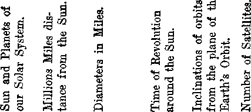

Mr
£ 'r. 26,1922, VoL ITT, Na 68
■S3 Published every other 1K|1 week at IS Concord Street, \J|F SroofcZj/n, y, r,, U. B. A,
Five Cents a Copy—$1.00 a Year
Canada and Foreign Countries, *Ui
Volvmb 3 WKDNESDAT, APR1 .6, 1922 XuMBra OS
CONTENTS of the GftfLDEN AGE
LABOR AND ECONOMICS
Wages and Wanderlust . 45S Slavery and Oppression 459
SOCIAL AND EDUCATIONAL
The Twentieth Century
pr«'xw and P«rai-hei'ualla 45<
The Savin! LTi fi»rtu nates 457
“Ami Hathaway” (poem) 453
Educational 1 tains ____________453
¥n-jHij.'?' Hiuids Ucid Out to Girls ......................... ..460
In Hopes of a Glorious Pnhire ...............-
POLITICAL—DOMESTIC AND FOREIGN
‘'Woe to you lawyers” —................... —.....461
The Washington Conference, as Seen by a Hoosier —.......463
(.'tuna, rhe Nemesis of Christendom ______—.—..404
SCIENCE AND INVENTION
Something TntereBttng about Stare ..— , — .....—469
HOME AND HEALTH
Sundry AtteUrtk I tains .................,.,, ,,.—.. ,, .,,—.,...-—.454
RELIGION AND PHILOSOPHY
What Say the Scriptures Studies te Dm **Har^ of aboot Dtatoe Healing? 471 God** ., . —————479
tDfttobed awry other Wednesday ad IS Cmarf '-Btrett, BrookTyc, N. Y,, . . . . B.&A, W WOODWORTH, RUDGlNOa Mai . lUMBT GAYTOM J. WOODWORTH ..... . “----
ROBERT J. MARTIN .... BuriMBi WM. F. HUDGINOB......9mT
Cnputaets and prapriettn. Adflraa: IB tJtrwt, Brooklyn, N. I., . . , . Fl¥* CWfr A. CW®—* yosHow orsrcrs BritteH34 Terrace, Lancaster Gate, Lo 2; 279 DntH»
Toronto, Ontarto-i AmbWw CoiHfis St., Melhoume, Maka igmittaiKM&te Md* Kptarad m second-daw nalWr ri MhMteA# tar*.
- T«lnme III
Brooklyn, N. Y., Wednesday, April 26, 1922
Number 68
IT WOULD not do to treat such an important topic as will be embraced within this article under any such brief heading as the mere word “Girls”, and so we choose in part a Latin title for the same loveliest and sweetest of all human themes. It is Oregon’s motto. It means, “She flies by her own wings,” and it well represents the story we have to tell. Oregon is not averse to being in the union. In her own sweet way she conveyed the hint to Uncle Sam that it would be quite the proper thing; but at the same time she would like to have Uncle Sam and everybody else know that she is married to him of her own volition, and that if worst comes to worst she can get along all right without him. Hurrah for Oregon, and for the girl that she so well represents!
We have no apology for discussing this subject. We could not think of a more attractive one. The man who said, “There is nothing in the world more attractive than a little girl— unless it is a big one,” expressed the true sentiments of every sane man, and most of the insane ones. Men are made to like the girls, made that way by the Creator, and made that way by the girls themselves, because they are so lovable. Indeed, many a man down in his heart has really regretted that the Lord made the girls so attractive, because of the too large place they have had upon his affections and interests.
The first man came to grief because he thought more of one wisp of a girl than he did of his Creator. The angels before the flood came to grief for the same reason; and many a man who might have been a bright-shining star in the first resurrection has gone the way of the death that shall know no waking because he has committed the fatal error of letting some human being have the very first place in his heart, the place that should be reserved for the Creator alone; and that human being has usually been the girl that he loved, the one that became in deed and in truth an idol in his heart. So this subject, while it has its lighter phases, is one of mighty import to humanldnd; and we expect to treat it largely from that angle.
A YOUNG man writing in one of the New
York papers a few weeks ago discoursed at length on what he considered the follies of the girls of New York city. He pictured them as freakish, alluring, improperly clothed, walking with mincing steps, overpainted and overperfumed, and went on to say that the real American girls were not to be found in New York, but in such cities as Columbus, Waco, Nashville. Spokane, Boston, and Philadelphia. Little the young man knows about it. New York is a great city, the greatest Jewish city in the world, the greatest Negro city in the world, the greatest Irish city in the world, and one of the greatest German cities in the world. But it is also the greatest American city; and if the • young man knew where they were, he would find in New York a million or so of the finest ty of American girl that ever lived.
When a man has married a girl that was born and brought up and lived all her days in New York city, and found her to be the last word in honesty, modesty, steadfastness, love, sacrifice, and goodness in thought, word and deed; and then, after years of bliss, death has robbed him of her companionship and he takes another life companion from the same identical environment and finds her to be the same identical kind of character, it makes the young man’s asseverations about the girls of New York look silly.
New York city, big and bad and good, is full of girls that are innocent, happy and true blue; girls that are spreading kind words and kind acts all over the stores, offices, schoolrooms, hos-
Bbookltw, N.
pitals, restaurants, factories, and homes of earth’s greatest city and are capable of making and do make the finest wives in the world; girls that are not mere fashion plates and theatregoers, but that can cook and mend with the best of them and, when it comes to intelligence and up-to-dateness, have no superiors anywhere. And what is true of New York is generally true, the country over and the world over.
Sometimes men appreciate the companionship of women too much. Isber Sarah, a middle-aged
times to with her to come
Syrian, r widower, attempted several get his daughter Marjorie, then living aunt at Iselin, a suburb of New York, back home and keep house for him, and be company for him. She laughingly put him off, and he suddenly lost his mind and tried to kill her. He is very contrite now, saying, "‘I don’t know why I did it. Why, I wouldn’t harm a hair of Marjorie’s head, but 1 was so lonely without her.” Marjorie did not realize how much her father missed her, but she knows now and has freely forgiven him. Meantime she is pretty badly chopped up with a butcher knife, which he wielded during his period of aberration.
Another case that did not terminate in the same kind of tragedy, but was a tragedy to one of the parties nevertheless, was that of a young man, Harry C. Anderson, who fell in love with a stenographer, Bessie Gitnik, and, in Bessie’s own words had followed her “all over town for two years”. He refused to consider himself an unwelcome suitor, so Bessie sought the aid of the courts to get rid of him. She narrated that when she got off the train to go to the office •> was always in sight; when she returned at x^toht he was always on the job; and when she went for a walk on Sunday he was always plodding faithfully along in the rear. The young man, investigated, turned out to be a proper person, really in love with the girl; and the court was puzzled to know what it could do to help Bessie. Our prophecy is that Bessie will be Bessie Anderson sometime instead of Bessie Gitnik. There is no use trying to dodge one’s fate or to dodge that kind of wooing. She must be a pretty nice girl, or Anderson would not be so persistent to have her at all hazards.
Winifred Black, writing in the Evening
Journal of July 19,1921, says that she has
discovered that with all of the fault-findii about the present-day girl some brand-new virtues have appeared; that she doesn’t faint, like the old-fashioned girl; she doesn’t cry if -you look at her; she doesn’t lace herself nearly to death; she doesn’t wear shoes two sizes too small for her; she is not afraid of mice nor .....
snakes; she can take care of herself; she is not catty; she does not believe everything she hears about another girl and whisper it from ear to ear at the next tea-party; and she doesn’t any longer take the man’s side as a matter of course. Good for Winifred, and good for the modern girl, even though her remarks do hint vaguely that other girls, in the remote past, had some ■ weaknesses to be deplored.
We would hardly need to suggest that the modern girl is independent. The criticisms of her rage largely because of this. It is contended by many that she is too independent, that human beings were not intended to be overly independ* ent, but were rather designed to be dependent, mutually helpful to one another, and really need- . ing one another.
FACING a future which is almost sure to include much of suffering and sacrifice, every girl is alive to the tragedies of life; but nature has kindly endowed her with the romance of mind which veils these tragedies and clothes the future with primroses and forget-me-nots* Such a mind, however, sometimes has marvelous faculties for seeing virtues where none exist.
There wasLandru, the French Bluebeard, who was guillotined in February for the murder of ten wives and one boy. While he was in tha Sante prison, Paris, he received a love-letter from a girl in which she said to this wretched man, “You are the type of man I have dreamed of as my future husband, strong, cahn, brave, handsome, and relentless. When you are re* leased I shall be waiting outside the prison to take you home.”
Foolish as one may adjudge the writer of that letter to be, the effect of the letter itself was instantaneous. Landru was delighted, and said that if only he had known this woman at the beginning it would have changed the whole course of his life. The seemingly reasonless devotion of many a woman to a man has not in*' frequently resulted in the transformation of his character.
■ One cannot be too sure that the girl who seems to be light-hearted and even frivolous i s as light-hearted as she seems. An instance occurred - .recently, showing the depth of feeling that lies F beneath a happy exterior. A girl of fourteen ■'failed to pass an examination in one of the public schools. The matter looked so serious to I. "her that although she took the announcement of her failure calmly, and with every apparent in? Jdication of composure, she went home, found a loaded revolver, and killed herself. This is the rC. - proof of how deeply she felt what she appeared to feel hardly at all.
In another class of jolly, happy-go-lucky girls E?, & teacher read two poems, one a gay piece and £ the other filled with pathos. She took a ballot g? to see which piece the girls liked better, and to her surprise found that without exception they
;F" had preferred the sad poem.
A feminine writer in the New York American, g? 'discussing the vein of romance in woman’s £ character (designed by nature to preserve her ^S/youthfulness and make her an object of perpetual interest) gives expression to the follow-fci ing, which we print with some doubts as to the g;' accuracy of the ideas expressed, but the F' thoughts themselves show that romance is there, k in the mind of the writer, and seeking expres
Bion:
U' "A woman may be plain-featured and bad-tempered, even a cripple; but if she can keep a man guessing i- she will win out over all the baby faces and come-hither § eyes. So with men. We wonder why a woman will run away from a handsome, rich, considerate husband who loves her, and take up with a romantic blackguard who abuses her. The answer is, She knows her husband; and the rascal has the lure of the Unknown. Hence— Keep ’em guessing! Preserve the mysteries! Let not the intimacies destroy the preservative reticences! We do not want to be sure. We are children, and love a game. And the essence of any game, even the two great games of Love and Life, is that we shall not know what comes next and what will be the end.”
The chances are that if one knew the author of the above he would find some dainty, demure little woman who would no more think of leaving a kind husband and running off with a romantic blackguard than she would think of trying to .Jpilot a rocket to the moon. But she likes to think —as doth the boy who, in the spring, dresses and Si - talks like Captain Kidd or Geronimo—of the
; things she might do if—if. And when her hubby jttiw the article, and identified the author by game; quaint expression familiar to him from long usage, he said nothing, but smiled inwardly, and wrinkles appeared at the corners of his eyes. Not for worlds would he miss that streak of romance in that one whose ways are to him so dear. That the ways are not always consistent does not bother him; it is enough that they are hers. The writer of the following little poem accredited to Shakespeare saw the point:
“Ann Hathaway, she hath a way; But were it to my fancy given To rate her charms, I’d call them.heaven; For though a mortal made of clay Angels must love Ann Hathaway;
She hath a way so to control,
To rapture the imprisoned soul, And sweetest heaven on earth display, That to be heaven Ann hath a way;
She hath a way, Ann Hathaway—
To be heaven’s self Ann hath a way.” ;
'TMIE winner of the mentality test at Simmons
College, Boston, in the spring of 1921, was a typical mountain girl from Leadville, Colorado, a Miss Constance Bouck, 19, tall and athletic.
The figures of the U. S. Bureau of Education show that more girls than boys graduate annually from high schools and that the proportion of girls in the total attendance at college is on the increase. The Bureau thinks the time is approaching when as many women as men will be enrolled in universities and other higher institutions of learning.
New Castle, Pennsylvania, has a most remark- -able girl, Betty Jane Hamilton, twelve years of age, who has completed the entire four-year high school course, leading in the honor class at that. Her English is above the ordinary and she converses fluently in French and Spanish. While she has been pursuing her high-school studies she has found time to study music, and at last reports was as much interested in dolls and roller skates as she was in her other activities.
Dr. Eliza1 eth B. Thelberg, head resident physician at Vassar college, has an unusually high opinion of the girls now passing through Vassar. She says of them: “The girls of this generation are splendid, capable, honest people”.
Mrs. Dora Thompson, Administration Assistant Principal at the Washington Irving High School (New York’s principal girls’ high-school)
^4
ttu qolden aqe
is opposed to the plan of forcing too much school work upon girls. She says that the double sessions are an evil, as they necessitate unwholesome meal hours, are fatal to normal home life, and force the girls to travel during the rush hours when all New York’s transit facilities are taxed to the utmost.
ENGLISH girls have a world reputation as pedestrians, and their accomplishments in this direction are being imitated in America. On the first day of January, of this year, two girls, the Misses Mary Milsk and Geraldine Somers, of Los Angeles, California, started on a zig-zag journey of 10,000 miles to Washington, where Miss Milsk will make a life sketch of President Harding. The girls are to walk the entire distance, not accepting “lifts” at any point, and when the journey is completed are promised that they will be given leading roles in Al Christy’s moving pictures. Miss Milsk is a professional free-hand artist and expects to make her expenses along the way by drawing pictures.
A little miss named Alma Mann, only twelve years of age, has established the women’s pedestrian record in the Canal Zone. The distance is approximately fifty miles, and she covered it in 16 hours and 26 minutes actual walking time, which, in that hot climate, is remarkable time for anybody.
Another young lady that is doing some walking at the present time where not many of us would care to keep her company is Mlle. Eleonora (probably plain Jane Smith if you knew her real name), who is now giving tight-rope performances at the Crystal Palace Circus in London. She will attempt to perform Blondin’s famous feat of walking across Niagara Falls on a tight rope. Probably she will not emulate Blondin’s method. He carried another person on his shoulders. When he was half-way across some villain who had bet that Blondin could not perform the feat cut one of the guy ropes that held the cable in plaee; but Blondin accomplished the almost superhuman feat of maintaining his balance, even with the great and unusual handicap of having another man of his own weight resting upon his shoulders, and he and his living burden reached the opposite shore in safety. Blondin is dead; but the man that he carried was living at last accounts and remem
Brooklyn,
bers vividly the time when he swayed back ancfY forth over the boiling cauldron, wliile Blondin*® balancing pole went up and down, up ant^down^ in the frantic effort to regain his equilibrium.
Girls have attracted wo rid-wide attention by; the strength and skill which they manifest a* swimmers. In August of last year a young girl, Mi ss Winnie Appleyard, swam from Rochester to Sheerness, England, a distance of sixteen 7'; miles, in 8 hours and 32 minutes. A few weeks earlier Miss Millie Gade, a Danish swimmer, twenty-two years old, now swimming instructor . at the Harlem Branch of the Y. W. C. A., swam around Manhattan Island, without making a stop, in 15 hours and 57 minutes. This is a long swim, twenty-five miles, and a dangerous one, on account of the great amount of harbor traffie encountered. Miss Gade is the second woman to accomplish this feat, Miss Ida Elionsky having done it in September, 1916, in 11 hours and 35 minutes. Miss Gade swam from Albany to New York in September last, and is planning to attempt the English channel next September. H she succeeds she will be the first woman to perform the feat, it having proven too much for even the Australian expert, Annette Kellermann.
In August, 1921, Miss Dorothea Behrman* age nineteen, who holds three medals for fancy diving and swimming, disregarding her frantie father’s telegraphed instructions not to attempt it, jumped into the whirlpool rapids of Ausable Chasm in the Adirondack Mountains, one of the wildest streams in the East. She accomplished the feat, being in the water four hours and covering a distance of 1050 feet. She escaped with a few scratches from the jagged rocks, and is the first woman to perform this feat.

PARIS chorus girls have taken to boxing and have found it a profitable novelty. A series of feminine boxing-bouts have been inaugurated at the Casino de Paris of Leon Volterra, and it is said that all the front seats are sold for weeks in advance to American tourists. Feminine boxing has spread to corners of the world where it would not have been looked for. The modern Chinese girl, it ?s said, boxes uncommonly well,-and is adept at swimming, wrestling, tennis, and gymnastics in general. There are no feminine 1 gymnasts anywhere to equal the Japanese girls. . They seem to have marvelous strength and per* feet equilibrium.
. Since the girls have taken to boxing it is commonly reported that a type of man once common ~ around New York is no longer safe, and indeed some men now fear to return a lady’s nod or smile for fear of what may happen if she suddenly changes her mind and discovers that the one she smiled at is not the one she first sup-
posed. Thus Benjamin G
-, a tailor, was
E-S knocked out by a well-directed left hook to the jaw delivered by Miss Louise Rahner, of Rich-l|> mond Hill. Benjamin said that he only asked Louise if he could help her on the street car, when she hit him. Then again, Miss Dora feC Greiner, age twenty, whipped Elias S----, age
K._ twenty-seven, on a subway train and dragged him to the police. The passengers were highly delighted with what she did; so it was probably all right. But if Elias was a married man it would make it hard for him to explain when he got home, with a fair chance that he got another walloping from his better half. Doesn’t the & Constitution say something about cruel and unusual punishments being out of place in this country, and doesn’t double punishment for the
B same offense come into that class?
Women doctors in England have been discuss-s* ing at length the question as to the effect of oVer-strenuous athletics upon motherhood. Dr. C. Cowdry, Principal of the Crouch End High
School and College, London, writing in Lancet says that she has been unwillingly - vinced by the logic of experience that the : ferences between the sexes are profound
the con-dif-and
vital; that the children of sporting mothers are ( nervous and physically inferior, comparing bad. Iy with the stalwart sons produced by slight women in the Victorian days. Dr. Arabella ; Kenealy, a celebrated physician, agrees with Dr.
Cowdry, using almost the same language. Dr. Letitia Fairfield, who during the war was medi-Bal officer to the Royal Air Force girls, has Warned girls against playing football, boxing or motorcycling. She notes that the children of Strenuous athletic women are usually females, rarely males, and if males are usually puny and y Helicate.
L’’ Other women doctors who discussed the ques-|. tion seem to disagree seriously with the opin-|| - ions advanced by Doctors Cowdry, Fairfield and fe - Kenealy. Dr. Mary Scharlieb, an eminent sur-IpL £eon, thinks that athletics are excellent for girls, takes pains to add, “Provided care is taken ever them”. Dr. Jane Walker thinks most of the criticisms about women in athletics are not sincere.- She goes on to say:
“The lie about puny children was nailed to the counter years ago. Investigations were made concerning the 1 families of athletic women who had been to Oxford or Cambridge. It was proved that they had beautiful, healthy children, and plenty of them. The trouble is that some timid mothers are beginning to be fussy about their girls, and there is danger of healthy exercise being interfered with.”
While we think women, like men, may easily overdo in athletics, yet all will agree that it is far better for a woman to have reasonable physical development than to be undeveloped; and sometimes emergencies arise where a good physique is of great value to its owner and not infrequently to others. In July, in the summer of 1921, in the vicinity of New York a well-dressed woman jumped from off a dock to save a drowning boy and girl, and saved them, too. On the same day another lady jumped from a balloon three miles in the air and landed safe. Late in the fall, in the same city, three young women rescued several horses at a fire that destroyed several automobiles. Rescuing horses at a fire is dangerous work; for the horses become frightened and unmanageable.
In the fall of 1920 two young women, Miss Alice E. Wilson, of Ottawa, and Miss M. A. Fritz, of Montreal, travelled two hundred miles in a rowboat, doing all the rowing themselves, down the desolate East shore of Lake Winnipeg, in search of fossils for the Geological Survey of Canada. On the entire trip, which took them a month, the only human being they saw was a lone Indian, fishing.
The Camp Fire Girls, an athletic organization for girls started in 1912, now has 125,000 members, with a considerable membership in England as well as America. They Acknowledge seven aims: beauty, service, knowledge, trustworthiness, health, work, and happiness. A lively girl, Helen Bullitt Lowry, writing of their achievements, says that they have found that they can have as good a time without any men along as the men can always have when there are no women along; that they have found that they can build their own fires, construct incinerators and barracks, and police them, do the Australian crawl (Now what do you suppose that is?) and climb mountains. She says that a generation ago “camping” to the average girl meant a canoe and a proposal, and that the
average girl was merely a pair of feet pasted to the hem of a dress, but that the twentieth century girl has rebelled—against this picture-book sort of girl.
OF COURSE women are beautiful, the most beautiful things in the world. Mr. Albert D. Kossak, recently from Poland’s court end the Hapsburg palaces at Vienna, says that the American girls are specially so. He says that they are all thoroughbreds, that none of them are ordinary, that they have beautiful feet and wonderful eyes, but that they paint too much. Mr. Kossak is right, right all the way down the line, and just as much right at the end of his story as at the beginnning. The clever American advertiser has lied to the American woman until he has deceived her into thinking that she looks better enameled, kalsomined, painted, varnished, puttied, striped and plastered than she does the way God made her. The advertiser knew that he was lying when he did this, but he wanted to sell his wares (at fifty times their value), and so he has filled the street cars with advertisements of lip sticks, eyebrow pencils, hair renovators, and face rectifiers until it makes a sensible human being sick to look at them.
Once we knew a young girl who had a marvelous complexion, as beautiful a combination of tints as the human eye could wish to rest upon. An older woman, who had tampered with her own complexion until her skin, unvarnished, had come to look like a rusty shoe, persuaded the girl to use paint and powder; and she ruined the gift which nature had given her and which had made her an object of more than passing interest to every one who saw her.
We know an older woman, twice her age, who has never used paint or powder of any kind; and her complexion is as fresh and beautiful today, more so probably, than that of the average girl at eighteen years of age. The women of the world are ruining their natural beauty by paying heed to the lying advertisers, and the newspapers do not dare tell them the truth for fear of the loss of advertising patronage.
Soap and water, and plenty of it, not only on the face and neck and arms, but all over the body, is better than all the cosmetics, and is not the dead give-away that cosmetics are. In New York, last summer, Magistrate Cobb sentenced several truants to a fine of $2 or a day in the
Tombs. Among the number was Miss FriedavJ
M-
. When she came before the judge sho -was so painted and powdered that the judge’s ' alternative sentence to her was that she should wash her face, and he added that in his judg- : ment it would greatly improve her beauty.
But there is fun to be had even from the follies of life. Betty, the niece of a friend, has arrived at the age of three. She recently landed on the dresser and managed to collect a box of face powder and a bottle of toilet water at the same haul. Straightway she made a mortar of the two, and applied it in true Parisian fashionface, lips, bands, neck—and besides that gum* " mod it well into her hair and over her dress and shoes. Hurrah for Betty. When she grows up she will be an adept. Makes us think of another young lady of the same age who got hold of her mother’s bottle of “New-skin” and plastered it all over her face. When her father caught her at it she smiled demurely up into his face and said, “Mama’s nu-ldn”. It took about a week -for the New-skin to wear off. ’ „ .
ATU the niceties of dress are in the hands of the girls, by common consent. The young man may be dressed ever so beautifully until he reaches the age of three, when he wants pants. The older he grows the more he veers away from feminine garb, and by the time he has reached manhood he dresses like every other man. None of them have any style, to speak of. To all intents and purposes they look alike. Their neckties are different; that is about all; and nobody pays any attention to as small an item as a necktie. His sweetheart may notice it once; nobody else will notice it at all. But not so with the girls.
The girls like nice clothes. Let the courageous who doubt this rise up. It is so; it always was so; and as long as there is a girl left it always will be so. And they like a lot of other things besides the clothes. Let the prophet Isaiah 3: 16-23, Revised Version, give a Hst of some of the things:
“In that day the Lord will take away the beauty of their anklets, and the cauls, and the crescents; the pendants, and the bracelets, and the mufflers; the headtires, and the ankle chains, and the sashes, and the perfume boxes, and the7 amulets; the rings and the nose jewels; the festival robes, and the mantles, and the shawls, _
and the satchels; the hand-mirrors, and the fine linen, and the turbans, and the veils.”
Not only does the modern girl like clothes, but she gets them and is dressed infinitely better, looks infinitely more comfortable, and youthful, . than ever before in history. The custom which took ten inches off the length of women’s skirts took more than ten years off their ages all around. Only a connoisseur now can tell the • difference between a girl of eighteen, twentyeight, thirty-eight and, dare we say it, forty-• eight. They all dress alike and look alike.
Professor Einstein, exponent of the relativity theory, on the eve of his departure for Europe told his impressions of the dress of American girls. He said, as reported in the press :
“I think American women are lovely, of course. There i& no distinct type as far as I can see. But they dress ■ remarkably well. All classes of girls dress like Europ. an aristocrats. For instance, a girl passed me in the street who looked like a queen. She was dressed not only in - tjle best style but in perfect taste. I thought that she was the daughter of a millionaire, but she turned out to be a typist in this hotel [Hotel Commodore]. Why, even the working girls dress like countesses. This is a wonderful thing.”
Superintendent Peter A. Mortenson, of the Chicago Public Schools, says that in his own work in the effort to protect and guide the young wf women of Chicago he has been handicapped by feck of cooperation from the mothers of the girls, who seem to resent any efforts or any suggestions regarding dress. For several years in every high school in Chicago they have had a dean of girls, whose duty it is to observe the conduct and dress of all the girls and to warn them against extremes. This is an excellent Ciistom and one which should be in force everywhere, and given parental support.
IT IS. rare that a girl deliberately goes wrong. She is usually more sinned against than sinning; but as there are naughty boys so. there are also naughty girls, though not nearly as many of them. There may be girls so stupid that they d& aot know the dangers of close dancing, night-riding in automobiles, drinking liquor, and smoking cigarettes, but very few men could be found that, would believe it, and when such girls go wrong they have only themselves to blame.
Most girls; are good girls, even the bad ones. JhhnB. Rockefeller, Jr., foreman of the grand jury that investigated commercialized prostitution in New York, said that as a result of his experience at that time he was convinced that eighty percent of the girls who go wrong would do right if they could have an equal chance to do right. The age when girls go wrong is the same age as the boys, about eighteen to twenty. Accurate data on this are available, based on reports covering the cases of 2,517 unmarried mothers under the city's care in a period of four years.
As with the boys, so with the girls, most of those who go wrong are children mentally; and this aspect of fhe situation is now receiving close attention. The New York Probation and Protective Association now has a woman physician present in the Women’s Court each morning who subjects first offenders to psychiatric tests and advises the magistrate as to their mental abilities. More than one-half of these girls are found to be mentally below par. Some are so deficient mentally as to be properly rated imbeciles. One girl of nineteen was found to have the mentality of a child of eight. As a result of these discoveries many girls formerly sent to prison are now placed in asylums.
seventeen years of
York, Catherine Z
Occasionally but rarely girls are active partners in crime. In May, a year ago, in New age, it was alleged, lured a man into a dark hallway to be robbed by her accomplice, who took Simon Darwo’s watch, stickpin, two rings and $6; and then he and Catherine went to the movies. Simon waited until they came out, and then had them arrested.
Paris has customs which would seem to us here to tend the wrong way, but are probably not so considered there. On November 25th of each year, St. Catherine’s day, thousands of young women who have reached the age of twenty-five without being married flock through \ the streets, exercising their traditional right to \ embrace any man in sight. They usually travel in bands, forming laughing rings around the men, from which the men can escape only by kissing each one.
Paris has the reputation of being one of the hardest cities in the world for unprotected girls and women without means. Well-dressed citizens strolling along the banks of St. Martin’» canal some months ago were startled at seeing two neatly but poorly dressed girls throw thena-selves, hand-in-hand* into the water. Rescued, the facts revealed that they had been two days without food and were penniless. Both were under the age of eighteen years. Real assistance came to them as a result of the publicity given the case.
GIRLS are more readily contented with meager wages than are boys; but their needs are just as great, or greater, and the wages that are paid them have a direct bearing upon their safety. In New York there are great numbers of what are called hall bedrooms, little rooms only six by nine, which are not overly attractive places f»r a girl to live in during all her idle hours. Girls who are forced into these rooms or into sleeping six in a room in the regular ordinary-sized rooms, as is now not uncommon in New York, chafe under the conditions imposed upon them and seek a change, sometimes to their undoing.
Housework is one of the most varied, interesting occupations of humanity; and there are so many electrical and other devices nowadays to lift its burdens that it is a wonder there is such a general dislike for it. Myriads of girls who are shivering for insufficient food and clothing, and who are earning a most precarious living by working in stores and factories, and spending most of what they earn for rent, would be far better off working in some family where food and shelter would be certain and an abundance left over to provide clothes and even to allow for laying by a little for a rainy day.
Just why it should be esteemed a privilege to work for a man in an office or in a factory or store on wages barely enough to enable one to keep alive, and why it should not be esteemed an equal privilege to work for a woman in a home, for wages that are really better when the cost of food and shelter is considered, is one of those things that do not appear on the surface. But servants are hard to obtain and hard to keep, and girls are not safe in some homes.
Miss Gertrude M. McNally, third vice-president of the National Federation of Federal Employes, claims as a result of investigations of wages of women at Washington that the average salary of a women is $200 less than the average salary of men, that during the war only five percent of the women appointed to civil service positions received wages more than $1,300, while forty-six percent of the male employes received more than that, and that the salaries of women experts in the women’s bureau of the Department of Labor are limited to $1,800 (with the exception of three, which are $2,000), while the same law allows $2,750 to $5,000 in the bureau of efficiency and other bureaus where comparable positions are filled by men; also that women working at technical work in navy yards, arsenals and mail equipment shops are paid less for their skilled operations than men in the same department are paid for pushing trucks.
Between 50,000 and 70,000 girls disappear annually in the United States. Many of these, of course, go to the cities and for reasons of their own do not disclose their whereabouts. In New York city 3,GOO girls disappeared, in Boston 198; but many of the latter were located. Various causes are assigned as to why the girls leave home: to see the world, to secure an education, to improve the matrimonial opportunities, to secure financial gain, to secure better treatment elsewhere than is possible at home, to avoid uncongenial matrimonial matches arranged for them by their parents, to relieve the heart of sorrow, to cover up a mistake, to manage their ' own affairs, etc. The percentage of immorality among them is small. Sometimes they leave because of quarrels at home, and sometimes because the boys in the family receive preferential treatment. Sometimes they leave because they wish better clothes, and sometimes they desire to get away from what they consider a humdrum life to get into the movies.
Anna Paportsky, age sixteen, weight 210 pounds, caught in the toils of the law, said she stayed away from school to cook for an invalid father and mother, that she was the best cook in the neighborhood, and that she did not wish to return to school because the boys and girls made life miserable for her by calling her “Baby Hippo”. Anna was sent to jail for one day to teach her to have more reverence for the law.
Two Boston girls, Marion and Mildred Winslow, set out from their home in Boston one Sunday afternoon for a ten-mile hike. They suddenly decided to go to New York, and after accepting numerous lifts from automobilists landed on Broadway the following evening. They fell into the hands of the Association for Proper Housing of Girls, and the next day wer« put on the train for home. ??
Cases of aphasia and other mental disturbance account for some disappearances. Miss Elsie

: Wolke, eighteen years of age, daughter of a . lamer in Lakewood, N. J., wandered for thirty-six hours in: dense woods near her home. When found she was unable to tell her name, but reg; membered that the number of the family letter hex was 87.
Miss Pamela Beckett, a wealthy and fashion-W. able society girl of London, wandered for nearly Y three days, hungry and shivering, in London suburbs. Miss Helen Lyons, of New York, a week before the day set for her wedding put her wedding dress under her arm and wandered fe/ forth, nobody knows where. Miss Jeanne DeC Kay, daughter of a millionaire Chicago packer, TJ disappeared, and her body was found floating in 'Y the Chicago River.
Y Two hundred very intelligent, and we think ..r very wise, young women a year ago last fall sailed from England to New Zealand with the , avowed intentions of trying to find good husbands in that far-off land; and without a doubt 2- most of them have succeeded by now. The World ' War has left few marriageable men in England, y and, they are in such demand that many girls j • must remain unmarried or look elsewhere for < life companions.
||Y. A S LONG as Satan continues to be the god of |H? this world (2 Corinthians 4:4) the strong Ri' will continue to oppress the weak; and woman, lip being the weaker vessel, will continue to be exH’.' ploited. There are plenty of girl slaves in China, ifo where during the recent famine ten-year-old ' girls were sold by their parents for $10 apiece, fe" There are still slaves in Turkey, in the harems.
story is in hand telling of the strange experi’ ences of Signorina Bufaletti, daughter of a Turin Pr •' musician, reported drowned when the Italian steamship Ancona was torpedoed by a German submarine. Her family mourned her as dead for six years, but have now learned that she ||y was picked up by a Turkish boat, and sold a slave to the Sultan of Turkey, where she is now I" a prime favorite in the harem.
The Searchlight- and other anti-Catholic publications give numerous instances of convents and similar institutions which are alleged to be run as harems, where thousands of poor girls are enslaved for- life and’ their children de- Stroyed' in quick-lime' or buriedi within a few howus. after birth. Many a thick-necked priest is. said to have the Sultan out-sultaned. Of course the Constitution forbids slavery, but what politician in this country lias the courage to face the facts and demand that the doors of these institutions be always open to investigation? And murder! Ugh!! What politician would think of trying to bring a priest to the gallows? Catholic votes would at once cease, and his political death would be certain.
Major Bascom Johnson, attorney for the> American Social Hygiene Association, declare# that the traffic in women and children commonly called the white slave traffic is increasing, due to the great increase in the number of girls and women who can neither marry nor find adequate means of support. The half-dead League of Nations Council has taken up this question*. Many girls have been lured to Central and South American countries by white-slave agencies', which signed the girls up as performers in sups posed music halls. One escaped and told it.
In some homes there is a land’ of informal slave, where an older sister is made cook, seamstress, laundress, and maid of all work for the entire family, without thanks and without allowance. Nellie Bly, writing in the New York Evening Journal, advises such girls to insist on. an allowance and on some leisure time, so that they may have proper opportunities to develop^ the same as the other workers of the family. She advises that the home duties after working hours be shared by all hands.
The New York Times reports a case of slavery in Paris extending over the winter of 1920-1921, which is heart-rending. The police searched the. house of a fisherman and his second wife, and found the fifteen-year-old daughter of a former marriage imprisoned in a small garret where there was just room to turn about. The girl waa a living skeleton, covered only with a few dirty rags, and bore countless bruises and scars. The only food she received was a few crusts, and her only way of getting water was by collecting raindrops from the roof in an empty sardine can. Having been kept there throughout the winter, next to the snow-covered roof, her feet had been frostbitten.
It was a custom among the Eskimos until recently to permit only the useful members of the community to live; and hence young girls, requiring more care, and being of less use than boys, have been commonly put to death. The custom has been recently abandoned, but it# practice in the not long ago past is responsible for a shortage of wives still existing in the frozen North.
The girls of Czechoslovakia, and of all Central Europe, are reported by investigators to be abnormally small. Six years of underfeeding, abnormal living, war, and desolation have left their mark. A party of travelers going through a paper-box factory in Prague noticed the 'diminutive bodies of the workers, and were surprised to learn that all these workers were in their teens instead of being eight to twelve years of age, as they appeared.
THE New York Probation and Protective
Association, previously mentioned in this article, touched the lives of about 2,000 girls ’during the past year. Their funds are too small to enable them to accomplish all they could wish.
A Woman’s Police Precinct has been opened in one of New York’s crowded centers. It is perhaps the first of its kind anywhere. The idea is to keep runaway girls who have committed no crime from coming in contact with hardened criminals. Part of the work of the precinct is a training school for police women.
The Girls Friendly Society of New York aims to help girls find homes, amusement, friends, and good food at reasonable prices. The Society,
BREVITIES
In Hope of a Glorious Future By e. d. Baikam
ENCLOSED please find $1 for renewal of my subscription to The Golden Age for the ensuing year. And here, Mr. Editor, I wish to express my approval of your publication, which is all it claims to be, “A Journal of Fact, Hope and Conviction”. Formerly inclined to skepticism, since reading The Golden Age and the writings of Judge Rutherford, I see things in a different light. Although past the allotted three-score-and-ten limit, I have taken new heart and live in hopes of a glorious future. Long life to The Golden Age I It should be in every household. I do not want to miss a single issue. It is worth its weight in gold, and is a source of great comfort to me.
which has sheltered about 1,000 girls in the past ten years, maintains a vacation house at Huntington, L.I. Of course all are familiar with the good work done everywhere by the Y. W. C. A.
Inwood House, formerly known as the New York Magdalen Home, has launched out into a ' new plan for caring for first offenders. The new
Inwood Boarding Homes are designed to give . girls recreation and education, and at the same • time to exercise a restraining influence upon them until they have learned the art of disciplining themselves so as to withstand temptation.
The girls of the South Philadelphia High School have agreed to obey the following ten commandments laid down by the faculty; and as these are good sensible commandments we have pleasure in presenting them to our readers and commending them to the attention of every good girl who wishes to stay good and to make the earth a better place for herself and for all:
“(1) Girls should be simply dressed at all times. (2) Avoid rouge, too much powder, and extreme decollette. (3) Avoid loud talking. (4) A girl should not take a boy’s arm on the street. (5) Do not grunt ‘uh.-huh’ when you mean yes. (6) Discourage extravagance on the part of the young man who invites you to the theater or to dinner. (7 Refrain from reading aloud explanations on screens of movies. (8) Do not speak of illness. Keep your conversation pleasant. (9) Send your young-man caller home at 10 p. m. (10) Wear simple jewelry.”
By Dr. Paul A. Zahlman, N. D. TN YOUR issue of January 18, Volume 3, ■T Number 61, page 240, under the heading of “Solving the Railroad Problem by the Golden Rule’’, I beg to differ from the writer. As I see it, the only just system of compensation for the employes of the railroads is that of public ownership and abolishing of wages; all to get paid by time checks, for a track walker is just' as necessary as an office employe, or more so, as far as the safety of the public is concerned. I honestly believe that this is the only just method to adopt.
And again, on page 247, under “Debt-Paying that would be Ruinous”, I would like to ask: If he were given a rest from work would it hurt
.-him? Just as if a person owed me say $10,000 I could afford to take a rest, as I would have the means to buy what I needed to keep body and soul together for myself and family. I could enjoy the beauties of nature, of art, travel, etc.
By all means let Europe pay its debts; it will give some of our hard-working American fellowmen a change, a chance to rest their weary bones and Eve; whereas if they rested now they would starve. No matter how badly they need rest now, they could not think of such a thing.
Again, if anyone is willing (whether he owes it or not) to give me wheat or corn or clothing or even copper (I could sell that), I would not worry; for I would be provided for. Our forefathers never worried when their cellars were well-filled. Of course, they usually filled these themselves; but surely it should not matter if : someone else filled our cellar for us.
Let all the workers produce less, so as to use up that $500,000,000 or billion each year. Would ’ it not be nice to have every man work only five or six hours a day? There would be less ' sickness for people could take better care of themselves then. Those that wanted to work longer (which would not be necessary) could repair our streets, beautify our cities, and fix up their own homes, a task which a good many are compelled to do on Sunday now.
Also on page 250 under “Away from the - Land” the writer says: ‘Tn Russia, now Socialist, the farmers who had been expected altruistically to produce enough for themselves and plenty for the city simply lay down,” etc. Now the truth of the Russian situation is that they had to feed a lot of soldiers who had to be used to keep some of the robbers and murderers such as Wrangel, Denikin, etc., (under the help of the Allies) out of their country; and besides, which has entirely escaped the attention of the writer of the article in question, Russia had one of the greatest droughts in history; everything burnt up.
“Woe to you Lawyers
By John Buckley
TEN years ago, a retired member of the legal „ profession told me that if all the lawyers s ■ in the city had their deserts, more than half of y- them would be in the penitentiary. Coming from £ whence it did, this was a surprising statement. ' Several years ago, a prominent judge, in an A’ address before the Twentieth Century Club, said that "the people should send business men to represent them in governing bodies, instead of lawyers”. The judge was not a practical man! Every business man knows that he cannot neglect his business to make laws for the dear people; while politics offers an ideal opportunity for a young lawyer.
That the young men realize this, is proven by the fact that sixty-five percent of our legislators are lawyers, while they represent but a quarter of one percent of the population of the country. I am not seeking to disparage any profession or any set of men. The lawyer is a necessity, and it would be just as foolish to condemn the calling as it would be to condemn ministers of the gospel because some go wrong.
During the late war, a young lawyer was called in the first draft. He secured diseased urine from a hospital, through a medical friend, and was exempt, as having Bright’s disease. Later, he was appointed to the Draft Board, was able to give his girl a valuable diamond, and purchase an expensive home.
In a small city where I lived, the church held a fair, and tickets were sold for chances on an organ, which was to be raffled. At the time of the drawing, a prominent lawyer and politician found himself in possession of a ticket but one number removed from the winning one. With a pen he changed the number, claimed the organ, and took it home. When the true number was presented, and he was asked to return what he had stolen, he told the committee that they had been violating the law, and that if they made any trouble, they would be prosecuted. The church that had been robbed was forced to buy another organ for the girl who had won it. The lawyer, however, had made powerful enemies, and it was not long before he was disbarred for pension frauds.
At present, in Boston courts, one judge, three or more district attorneys, and a number of prominent lawyers, are waiting trial for blackmail and other misdemeanors; and while they may not be guilty, we may very well suppose that “where there is smoke, there must be some fire”. ,
No man can wholly resist teaching and environment ; and we are all human, and with human failings. Teach people how they may be able to evade the laws, and it is to be expected that some will avail themselves of an opportunity that offers advancement. It is deemed very proper for a lawyer to do what would send an ordinary man to the penitentiary. Every criminal knows where he can find an attorney to defend him, and there is no organization for the commission of crime that does not have its legal adviser.
Our hard-headed legislators sometimes introduce before their representative bodies measures that only excite ridicule. It must not be supposed for an instant that they are as foolish as the bills that they sponsor. By presenting such measures, they secure support for reelection, and possibly the bill may contain a clause that will nullify a measure to which a friend or client is opposed. Again, it may discredit an existing law that they are paid to oppose.
Our world contains three classes of people: smart, medium, and dull. If all of the intelligent were conscientious, the world would be well-governed. Such is not the case, as we know; and to put the management of our affairs into the hands of a class, as we have done, is unwise. We are trusting our affairs to a class that is so numerous that they cannot all make an honest living.
The lawyer or the judge who is conscientious, and a Christian, we can safely trust. If he is capable, honest, and a student, we can ask no better servant for the public. We face a fact. Our laws are made in a great part by criminal lawyers. By this I do not mean that the men are criminal in fact, although in some cases that may be true. The men that we know may be above criticism and of the best; but we do not know them all; and the outbreak that we find in Massachusetts will be easily found in other places, if we look for it.
The Gift of Speech
By II. B. Coffey
OF ALL the blessings which the Airnighty bestow’ed upon man at the time A' his creation one of the most essential is the human voice; for vocal sounds were the first vehicle for the communication of thought. Without oral language the happy phrase, "The fatherhood of God and the universal brotherhood of man,” could hardly have been an expressed idea.
Indeed, aside from being the first and most primitive mode for thought transmission oral expression is also the most ideal method we have for expressing ourselves. Training the youth in oral English has more to commend it than has the written method; for language is the tool of everyday life, and how few can use it effectively—how few are complete masters of self-expression!
Robert Louis Stevenson has said:
“There can be no fairer ambition than to excel in talk; to have a fact, a thought, or an illustration pat-to every subject; and not only to cheer the flight of ' time among our intimates, but bear our part in that Jg great international congress always sitting, where public wrongs are first declared, public errors first corrected, .:7g and the course of public opinion shaped, day by day, a little nearer to the right.” . *
Modern thought expression has resolved it- . self into a number of divisions. We have public speaking, which means oral English delivered by a speaker to a number of individuals called an audience; declamation, meaning the oral in- 3 terpretation to an audience of another’s thought - . from memory; oratory, meaning that branch of • public speaking wherein persuasion through an appeal to the emotions is effected; and extern-pore speaking, argumentation, conversation, and oral reading.
In argument the speaker attempts to prove a given proposition true or false. If an opponent is present, and waiting to reply, this form of speech is called debate. In extempore speaking .7? the speaker forms language for the expression of his thoughts at the moment of delivery. Oral reading involves clearness, intelligibility, and sympathy,, as is proven in this verse from the Bible: “So they read in the book in the law of God distinctly, and gave the sense, and caused sj them to understand the reading”.—Neh. 8:8. -~
Present-day inventive ingenuity has sought .12 to abbreviate but cannot eliminate the necessity for oral expression. Learning, according as it is used, has the power to multiply either good A
or evil. The printing press, conveying thought <
to the mind through the eye, has been a power- J ful factor for the multiplication of ideas of in- ’ dividuals. The single sentence, “Thou shalt not surely die,” the first lie to fall from the lips of J a mortal, has been repeated until it has per- . meated and colored the thought of our entire social structure. —
Yea, more, aside from the conveyance of hu- J man ideas by the press, we have the human . voice recorded and can reproduce it at will. The question arises, When will these artificial methods reach the climax of their perfection and will the necessity for them ever continue! More marvelous changes than have been
wrought in the past await us in the future. Conveying ideas by printer’s ink has furnished the opportunity for much cheating and lying. Much of our news has been false propaganda, in the interest of the few, to control and keep in subjection the minds of the many. But ingenious devices are appearing on the horizon which promise to eliminate opportunity for fraud in conveying ideas.
Some day each human individual may carry in his vest pocket his own private wireless telephone, through which he can receive reliable news from various parts of the earth and communicate at will with private individuals wherever they may be. Then, too, the necessity for the phonograph will be practically eliminated when the prophetic wTords of Jesus have had fulfillment, as they must: ‘All that are in their graves shall hear the voice of the Son of Man and come forth’.
Each individual who in the Golden Age renders himself obedient to the great Prophet and Lawgiver like unto Moses, will gradually come to possess a perfect voice, which will need no recording as a means of preservation; for men will then live forever.
The gift of speech cannot be appreciated now. Only when the curse shall have been “rolled away” can there be complete happiness and harmony. Now discord mars the beauty of human expression. Argumentation wall not always be admired as an art. Some day yet future earth’s millions shall see eye to eye, and this will in no wise mar or injure the individuality of anyone in the least.
Some day every vocal chord of every individual will be attuned to perfect harmony. This some day will be at the end of the thousandyear day nowT dawning when Christ’s dominion shall be delivered to the Father. We may well expect as a fitting sequel to this momentous event to hear the swelling anthem, “Praise God, from whom all blessings flow”—the blessings of . speech included.
AT THE present moment the affairs of China, and the relations of that country with Japan loom large in the public eye. It is admitted that the prospects of a naval holiday hinge on a solution of the Chinese question. In a recent article by Herbert George Wells, the prominent English writer, he advances the opinion that unless the Powers by mutual agreement guarantee to “leave” China “alone, while she reconstructs”, protecting her from agression, and conceding “her the progressive abolition of extraterritorial privileges and the same unlimited rights over her own railroads and soil and revenue that arc enjoyed by the Americans and the Japanese”, the Disarmament Conference will be a failure and merely a prelude to another war. But he expresses a doubt whether the assembled diplomats at Washington possess sufficient clearness of vision to forego their competitive zeal for the exploitation of Chinese resources.
Admitting that Japan is inspired by justifiable motives for national protection, Mr. Wells says that that nation is “now pursuing an entirely "European’ policy in China; intriguing to get a free hand in Manchuria and Eastern Siberia; scheming for concessions, privileges, and the creation of obedient puppet governments in a dismembered China; planning to divert the natural resources of China to her own use”. Wells considers this policy a mistaken one, arguing that Japan’s proximity to a rich and prosperous neighbor, allowed to rehabilitate herself without outside interferences, would insure the island a monopoly of its foreign trade.
Since the article was written, the Powers have apparently come to an agreement, but not on the lines suggested by Mr. Wells. Indeed, they conceded Japan a free hand, it is reported, in both Manchuria and Mongolia, and will allow that nation to retain joint control with China over the Shantung railway. On their part the Japanese promise to "‘do nothing to impair the territorial or administrative integrity of China, or the Open Door”. The Chinese delegation receives this reported decision of the Powers with “disquietude”; to them it looks as if the “secret session” had arrived at an understanding whereby China was to be exploited as usual, but with the difference that no one was to take an unfair advantage of the other in grabbing more than that one’s share.
464
The Chinese entertain strong suspicions that -J: the British suggestion for an extension of the four-power consortium and the pooling of all railroad and other concessions, implies an understanding among the Powers to get hold of the finances and resources of China and to ree- ’ ognize the status quo. They feel that the pressure on China is tightening, instead of being re-' laxed; and they have resolved to “stand pat”, and to concede nothing.on their part, for fear that their country will become an international “mandate” or will be carved up among the Powers.
China is the enigma among nations. While all the world was progressing, China stood still.. During the rapid industrial development of the nineteenth century, with its astonishing transformations, China remained sunken in lethargic contentment with the standards of a past age, contentedly oblivious of the stupendous changes going on outside; self-existent, an archaic survival. All this clangor and drone of machinery, puffing of sooty smoke, frenzied enthusiasm to seek out new inventions, hurry and scurry, anxiety to investigate everything in, over, and under the earth, only dimly affected her consciousness. She had no faith in novelties or in labor-saving devices. All the basic arts that modern civilization had builded on, she herself had discovered centuries ago, but only to discard or suppress them. The wisdom of her own experience taught her not to be anxious to adopt machinery for replacing human labor, but to foster the primitive system that provided many hands with labor, and all mouths with rice.
For China is a horrible example of the results of over-population. In our own country it is estimated that it takes twenty acres of productive land to support one person for a year; in Japan it requires only one-third of an acre; but in congested Shantung province six people derive their subsistence from each acre. In consequence the struggle for sheer existence is so
intense that nearly every one passes his life / with the specter of starvation constantly hov-ering at his elbow; and four-fifths of every = thought and utterance relate to food. *
Here in the United States we can hardly imagine the unspeakable squalor, the indescrib- -able misery, the universal dread, the apathy and the hopelessness that pervade -whole communi- -ties. Neither, in our day, is this appalling poverty of the Chinese masses ascribable to exploitation by the rich; for the cultivators own their diminutive farms and their own implements. Indeed, the struggle for existence is so stern that any parasite class is eliminated; for there is no surplus. Moreover, the Chinese system of ' agriculture is so perfectly adapted to the needs - of a swarming population that no material - / benefit would accrue from the introduction of . improved scientific Western methods. It is simply the effect of over-population—irremediable, unless there is an cutlet found into more sparsely settled regions. To aggravate the evil, the race is increasing at a more rapid rate than $my other, being at the ratio of 60 per 1,000; whereas Japan’s increase is only 48 per 1,000, Italy’s 33, and the United States and Great Britain’s 29. Evidently unless some system of ' birth-control should be instituted, a time might come when the land could not any longer afford sustenance for its teeming multitudes, and the latter would face the alternative of either dying in their tracks or else migrating.
The Chinese are essentially home-loving and unmartial. They regard war as an illogical disturbance of sane industrial activities. Their
‘ religious ideas require them to be buried among k the bones of their ancestors. However far they E- wander from their native village, they intend H to return thither, living or dead; but they leave
. only from necessity, not from choice. The Chi-g' nese race constitute a reservoir of potential energy. During innumerable generations they have been trained to endure the extremity of economic pressure, until today they are patient, enduring, frugal, and industrious beyond any Western comparison. They are unmilitary, but they possess the virtues of fortitude and quickness to learn; The hardships and the precarious tenure of their lives have engendered in them a contempt for death.
Chinese soldiers have been known to commit Suicide by regiments, rather than face the enemy. But latter-day military training includes psychological features; so if the astute Japanese once seriously took them in hand to make soldiers of them, there is no doubt that the Han-
; ' jin might acquire martial ardor. However, as long as our present system continues in the world, the principal danger from the Yellow Peril to the Occident exists in their capacity to under-live the white people. If American or European capital should withdraw itself to the Far East, to profit by the inexhaustible supply of cheap labor there, the results would be disastrous to the West. As long as Japan retained special privileges in China, Western capital was wary of entering the Open Door; but if the moneyed interests of Japan and the West reach an agreement, we may probably expect heavy investments in the Flowery Republic and a rapid development of her railroads, mines, factories, and other resources.
The Chinese themselves are helpless to resist foreign encroachment. At the Conference they reiterated their frequently expressed desire to be allowed to handle their owm affairs. This has always been their urgent entreaty-—to be let alone. When the Chino-Japanese War left China weak and disorganized, and when the Powers commenced a race to despoil her, the astute and patriotic Dowager Tsu Hsi-an in desperation declared war on the world. The feeble efforts of the decadent empire were tragic in their futility, and the Powers took advantage of the occasion to extort greater concessions.
There is not space to discuss in detail the shameless rapacity of the white race in their intercourse with the Celestials, or the smoldering resentment of the “Black-Haired Race”, which sporadically broke out into impotent efforts to eject the intruders. The wdiite people and the Japanese are the only nations which the Celestials have been unable to assimilate and peacefully absorb. Time and again other races—Jungs, Hiwngnu, Hindus, Kirghiz, Mongols, Manchus, Arabs, Turks, Jews, and Persians—have overflowed their borders, either as settlers or as conquerors, only to lose their national identity in the course of generations and to become, to all intents and purposes, Chinamen.
The Chinese themselves, in a political sense, have rarely been aggressive, although very enterprising as traders, so much so that at one time their junks traversed the Arabian Sea and the Indian Ocean, trading with Siam, Java, Ceylon, and East Africa. Generally when some Chinese dynasty started on a career of military aggression it was in retaliation for long-continued annoyance by nations beyond its borders. The series of campaigns which carried the armies of Han Wu-ti (a contemporary of Scipio Africanus and Caius Marius in Rome), perhaps to the Aral Sea and the Caspian, were
fijlOOKLYX, K.' X. X
' primarily undertaken to strike horror into the hearts of the Hiwngnu nomads of Mongolia, whose incursions had grown to be a national peril. Likewise the imperial expansion under the T’ang dynasty, whereby Mongolia, Eastern Turkestan, Korea, and Tonquin were incorporated during the seventh and eighth centuries, was a reaction against the encroachments of the Toukinei, or Turks, who then dominated the north.
It is difficult to realize from China’s present role of decrepitude and impotence, the once splendid position she occupied among the nations of the Far East. When the white men first made their advent in the Indies, in the sixteenth century (the time when they first began to spread out all over the planet and to establish themselves as the dominant race of the world), China was the admired and respected center of a world of its own. Isolated during many centuries from all contact with the West, except the very slenderest intercourse, the Flowery Kingdom had developed an indigenous civilization, eminently suited to the requirements of its population. Theoretically this civilization was founded on benevolence and public duty. All men were mutually responsible for each other’s good conduct, and not even the Emperor was exempt. He was Tien-sze, the Son of Heaven, the archetypal Chinaman, responsible to Heaven for the conduct of his subjects. If his personal character was deficient, Heaven might testify its displeasure by visiting the land with floods, drought, pestilence, or locust plagues.
The ancient policy of China was to expand its borders peacefully, by benevolent assimilation of the aborigines. Beyond their borders the ■Chinese communicated their type of civilization by pacific intercourse to Thibet, Tonquin, An-am, Cambodia, Siam, Burmah, the Liu Chiu Islands, Korea, and through Korea to Japan.
It is an error to suppose that Chinese civilization was completed in remote antiquity and remained unchanged down to the twentieth century. Its civilization slowly developed during many centuries, under the Sung dynasty, whose seat of government was Hangchow. This dynasty failed through the depreciation of its currency, terminating in financial and industrial collapse. Copper, which was the metallic base of its currency, nearly went out of circulation, owing to the great demand for that metal by the Buddhistic Thibetans and Mongols ", for ecclesiastical purposes and, finally, to the conquest of the copper-mining regions by the Mongols. The government was forced to pay its obligations in inconvertible paper, which rapidly depreciated. Ultimately it could not furnish rations to the river garrisons and the crews of its war-junks. The latter became mab content, and the Mongols overran all China under Kublai Khan. The Middle Kingdom thereafter suffered the darkest period of eclipse in all its annals; and China stagnated from that time on, remaining practically at a dead level, with little tangible progress.
In the sixteenth century, when the Europeans began to arrive in Chinese waters, the character of Celestial civilization had become definitely fixed, whatever changes supervened being the result of an attempt to accommodate themselves to European military ideas, by adopting European military equipment, as a self-defensive measure. The Chinese of that period regarded themselves as the preeminently superior people of the universe, the teachers of the nations, the fount of culture. All other races were their servile imitators and admirers, and obsequious tribute-bearers to the exalted Son of Heaven who was emperor of the earth by divine right. It was but natural that the arrogant and contemptuous bearing of the intruding Fan Kwai jarred on their susceptibilities.
Moreover, the white men revealed a rapacious, unscrupulous, and aggressive disposition from the start. Almost the first Portuguese <o visit China signalized their arrival by burnihg villages and rifling tombs. The white men violated the most sacred instincts of the ’Sons of Han, and were utterly ignorant of the code of elaborate politeness in which all Chinamen were carefully instructed during childhood, and of. which even the rude Tartars had some knowledge. In short, the presence of the Europeans came to be regarded as a moral pestilence; and since they were not able to segregate the intruding Fan Kwai, the Chinese emperor isolated Ms subjects from all contact with them} except in a few restricted areas. His example was followed by the rulers of Korea, the Liu Chiu kingdom, and by Japan.
The immediate circumstances which led to this isolation of China and Japan may still be of interest. During the sixteenth century th« Japanese were not a "hermit nation”, but wki
enterprising traders, their trading-junks especially frequenting the ports of Chehkiang. These traders were vassals of the powerful Ouchi family, at this time supreme in southern and western Japan, and very wealthy as a resuit of their commerce with Chehkiang and Korea. In course of time disputes arose between Japanese debtors and Chinese creditors, leading to a complete prohibition of the foreign trade by the governor of Chehkiang. This so grievously offended the Chinese merchants that they addressed a memorial to the throne at Peking, impeaching the governor. As the memorial was accompanied by liberal bribes to the high mandarins, the merchants were successful in having the governor removed and beheaded for malfeasance in office.
But the anticipations of a resumption of trade were dispelled by the arrival of a powerful Japanese fleet, which came as pirates to avenge the fancied insult offered to the proud Ouchi daimyo. The Japanese attacked and pillaged Ningpo and Shanghai, and sailed away. The next raid was defeated by a Chinese commander, who was recompensed by a false charge of treason and executed. Undismayed by their defeat, the Japanese continued for many years to come and harass the coasts, lurking among the coast islands and preying on commerce. Their nefarious operations were assisted by renegade Chinese who acted as spies and guides. The latter were punished by a perpetual degradation of their descendants, the Tomin outcasts, who were debarred from participation in the Competitive Examinations (Chinese Civil Service, open to every Chinaman of reputable family), restricted to certain despised occupations, such as barbers, actors, sedanbearers, and compelled to wear a distinctive dress and their women forbidden the “Golden Lily”. . .
Meanwhile Xavier, so-called “Apostle of the East”, arrived in Kagoslima, and met with overwhelming success in converting the native princes to Roman Catholicism. The example of these princes was followed almost en masse by their clansmen, especially the men of Satsuma and Chosiu. Nagasaki became a Christian city; and the princes of Bungo, Arima, and Omura went on a pilgrimage to Rome, via Lisbon and Madrid. They were received with much honor by Philip II of Spain, and also by Pope Gregory xni, who nourished dreams of adding far-off Zipangu to his spiritual empire. He dispatched missionaries thither, giving a monopoly of the missions to his favorites, the Jesuits, much disgruntling the Franciscans and Dominicans thereby.
But the dictator of Japan at this time was Hideyoshi, who succeeded his defunct lord No-bunaga and carried out his policy of centralizing the Shogunate by breaking the power of the daimyos. Hideyoshi was an astute and wily politician, and had sifted various rumors of European aggression and rapacity throughout the Indies. It had been reported to him how a Spanish sea-captain had boasted in his cups that his most Catholic Majesty, the puissant Philip, first sent missionaries to break down the morale of a nation, and then soldiers to formally annex it to his far-flung dominions. The upshot of it was that in 1587 Hideyoshi issued an edict against “foreign teachers” and expelled all the Roman Catholic missionaries from the archipelago.
He now regarded the numerous Christian population of the southern provinces with cold suspicion; and so when a delegation arrived from Korea, inviting him to intervene in a dynastic squabble Hideyoshi eagerly seized the occasion as a chance to decimate the Christians by sending an expedition to the peninsula, composed mainly of the Satsuma and Chosiu clans. Other motives contributed to his embarking in the Korean war; for he cherished an inordinate ambition of seating himself on the “dragon throne” and founding a new dynasty in China. His inspiration is said to have been his belief in the Japanese legend that Genghis Khan was an expatriated son of Nippon.
So Korea was invaded; and as the Chinese promptly espoused the cause of the rival Korean claimant, a bloody war ensued in the course of which the flourishing civilization of the peninsular kingdom was ruined, so that it never afterwards recovered. At one time hostilities were suspended while Hideyoshi and the Ming emperor Shen Tsung negotiated. Hideyoshi wanted to partition Korea; but the Son of Heaven, obtusely unaware of Hideyoshi’s character and aspirations, thought to conciliate him by officially recognizing him as wang, or king, of Japan. This was equivalent to inviting Hideyoshi to commit sacrilege; for the person of the Mikado was sacred aild inviolate, and only the dynastic line, that of Jimmu, descendant of the goddess Amaterasu, ever reigned in Japan. But this was a spiritual dominion, and Hideyoshi already possessed the temporal power; so he was grossly offended, and in a rage vowed to the stupefied Ming envoys that he intended to become Soh of Heaven. So the war was resumed, but in the end both parties were exhausted and evacuated the wrecked peninsula, Hideyoshi going home to die.
In Japan his lieutenant, lyeyasu, then became dictator, but not without a struggle. The civil war that ensued was a struggle between the Christian South under Ishida Mitsunari and the Buddhist North under lyeyasu. The latter was victorious in the battle of Sekikahara, where the defeated daimyos were ordered to hara-kiri; but being Christians they refused, preferring to submit to the ignominy of being beheaded. lyeyasu now inaugurated a dreadful persecution of the Japanese Christians, rivalling in horror the persecutions of Nero or Diocletian, or the contemporary cruelties perpetrated by the Spanish Inquisition against “heretics". Thousands of Japanese converts w’ere beheaded, crucified, burned alive, and buried alive. Perhaps the Japanese were already assimilating European ideas! In the end, a desperate remnant took refuge in Shimabara castle, which they defended with great tenacity until Holland Dutch galleons pounded breaches in the walls of their cannon, through which the Shogun’s swordsmen swarmed in to massacre the survivors.
Being Protestants, the Dutch entertained no sympathy for Roman Catholic converts, and they deemed it sound policy to conciliate the Shogun and thereby secure a monopoly of the Japanese foreign trade. But this trade was much circumscribed; for the Shogun had determined to definitely close up Japan from foreign intercourse. A factor contributing to this determination was a malicious intention of ruining the lucrative commerce of Kyushu and the South with China, Tonquin, the Philippines and Siam. So he passed an Exclusion Act which made Japan a “hermit nation” until 1853, when the American frigates under Commodore Perry forced an entrance as the forerunners of commercial agents.
lyeyasu devoted all his efforts to consolidating feudalism under the Tokugawa shogunate, and was so successful that the “Dragon-Fly Land” enjoyed about 250 years of tranquility; for feudal wars were discontinued, and without external interference the nation consummated its development on intrinsically national lines undisturbed. This was the true period of Japanese felicity. But Occidental commercial enterprise required constantly fresh fields for expansion, and the wealth and prosperity of Nippon tempted their avarice. The self-sufficiency of the Islanders and their indifference toward outside “progress” appeared little short of criminal to the West, which was benevolently eager to inoculate the archipelago with the alleged blessings of European civilization.

So, as elsewhere, the Europeans used their superior armament to overawe the natives, and to extort admission for their goods and their ideas. The result was that Europeanism took root in the Islands, spreading like an exotic plant in a congenial soil. The Japanese were transformed from a conservative foreignerhating race into such ardent admirers of Occidental culture that at one time it was seriously proposed to abolish the Japanese language and to substitute in lieu of it the English. But as the Tokugawa policy was contrary to this metamorphosis of national character, the same was not accomplished without a revolution; and in place of the dual system of government, the shadowy figure-head of the Mikado was invested with actual temporal sovereignty. Thereupon the Nipponese embarked on that career erf extraordinary development on Occidental lines which has been the marvel of our times.
Japan is, geographically, the Great Britain of the Far East, so situated as to be the logical dominator of the Eastern seas. Her people are notoriously aggressive and warlike. Her national prosperity is believed by her ruling class to require control of Chinese resources. China is essentially pacific, and lacks political solidarity. Without Occidental interference, Japanese ascendancy in the Middle Kingdom is inevitable. But needing an outlet for her rapidly increasing population to overflow into Manchuria and Siberia, Japan subscribes to the Open Door. The Chinese ambition remains their unchangeable one of being allowed to manage their own business without outside interference. As long as the Chinese problem is unsolved, and 400,000,000 of discontented human beings nourish a sense of injustice and imposition, there can be no permanent guarantee of the world’s peace. China continues to be th®
great enigma; for no one can predict what bearing the incalculable reserves of energy latent in her teeming population may have on human destinies in the near future.
For generations we have talked about the “’Awakening of China”, wondering what would happen when the slumbering, dreaming giant should wake up. As if in apprehension of this awakening, the Europeans introduced opium into the country to deepen the giant’s somnolency; for centuries ago the divinely inspired Prophet declared: “Let the heathen be wakened and come up!” (Joel 3:12)—to the field of Armageddon. Perhaps China has been saved io become the Nemesis of the Sons of Japheth, the most cruel, rapacious, and unscrupulous among all the posterity of Adam. They may be requited according to the exact measure of their deeds. “I will judge thee according to thy ways, and will recompense thee for all thine abominations.”—Ezekiel 7: 8.
In the last days the blood of the colored races will cry out from the ground, and retribution be exacted by Him who saith: “Vengeance is mine: I will repay”. It is written: “Wherefore I will bring the worst of the heathen, and they shall possess their houses: I will also make the pomp of the strong to cease, and their holy places to be defiled”. (Ezekiel 7:24) So did the Christian (?) white nations to the heathen, and so will they be recompensed. When the white race has exhausted itself through fratricidal struggles; when its institutions, founded on a hypocritical profession of the Golden Rule, are shattered by a disillusioned public; when Christendom lies weak and impotent before the aggressor—as China is now—perhaps an awakened and vindictive Asia may pour out its teeming swarms to complete the havoc. It is written: ‘Moreover, I will make thee waste and a reproach among the nations that are round about thee”.—Ezekiel 5:14.
Nevertheless, whatever woes befall Christendom, they are not irremediable, but must be regarded with resignation as the necessary demolition of a preposterous and unjust system, under which evils and abuses multiplied and real happiness and peace for the majority were impossible. We must cultivate patience under the afflictions soon to be visited on the world, and look forward to the brighter era which will succeed, when a perfect system will be instituted during the Millennium now at hand, under the reign of the King of kings and Lord of lords, our Master Jesus Christ.
I HAVE just read the article on page 208 of the January issue of The Golden Age. Being an M. D. myself, I believe your words are true in the main. If they were not, I would be quite sure to feel the results of your terrible “swat”. However, being rather lively, common clay, I managed to dodge your “knock-out”. If you care to, come along with more of your “swats”, I personally, at least, will take a chance on further dodging. Surely I am thankful I am not a “sky pilot”.
But there is one thing which your contributor neglected to mention: Latin prescriptions are not used wholly to “deceive” the laity, but had a laudible principle underlying them — viz., that all druggists and doctors, whether here or abroad, might be able to decipher them. A pardonable volapuk, if you please.
THE accompanying table shows the twenty first-magnitude stars. In the case of the four stars Regulus, Achernar, Spica and Rigel, the distances are a little more than guesses, but the values given are the present best consensus of astronomical opinion. There are various methods of estimating distance in addition to that of direct measurement of parallaxes. The most satisfactory of these is usually an estimate on spectroscopic grounds of the real brightness of the star, coupled with measurement of its apparent brightness. In the four, cases mentioned above the several methods give ambiguous or contradictory results and we can only use our best judgment as regards the true values.
In the cases of Canopus and Deneb little more can be said than that these stars are very remote, probably 500 light years or more. No particular limit can be put upon how much more.
|
Sun ....................- |
866,540 | ||||
|
Mercury ________ |
36 |
2,765 |
88 days |
7° | |
|
Venus --------- |
67 |
7,826 |
226 days |
3° | |
|
Earth ________ |
93 |
7,918 |
1 yr- |
0° |
1 |
|
Mars .......... |
141 |
4,332 |
1-9 yr. |
2° |
2 |
_ , . , (Over 600 of them
Zone of Asteroids 1
( 500 mi. dia. and less.
|
Jupiter . |
______483 |
87,380 |
11.9 |
yrs. |
2° |
7 |
|
Saturn __ |
____ 886 |
73,125 |
29.6 |
yrs. |
2|° |
10 |
|
Uranus - |
_____1782 |
34,900 |
84 |
yrs. |
1° |
4 |
|
Neptune |
_____2791 |
32,900 |
164.8 |
yrs. |
2° |
1 |
The three stars for which diameters have been given are, so far, the only ones to which the Michelson interferometer method has been applied and consequently the only ones for which values can be given. The application of this method involves a certain amount of observational error, and an integration which in itself is only approximate calling for reduction of the results from seconds of arc to miles by reference to the distance of the star, consequently these diameters are only approximate values.
Some of the interesting data available regarding the sun and the planets of our solar system is given in the table herewith. Of the planets Jupiter is the greatest in volume and mass. It exceeds all the other planets put together. When seen through a telescope it exhibits many and various markings. In the ease of the planet Saturn the shadows cast by the ring upon the planet and by the planet upon the ring which encircles it can be plainly seen.
The diameter of the Moon is 2163 miles. Distance from the Earth to the Moon is 240,000 miles. Distance from the Earth to Alpha Centauri, the nearest star, is 4| light years or 25 trillion miles. A “light year” is the distance light travels in one year. Light travels 186,300 miles a second. One light year equals 5,865,696,000,000 miles. It takes light 1| seconds to come from the Moon. It takes light 8 minutes to come from the Sun.
|
Stars of First Magnitude |
Constellation Located in |
Color |
Distance |
Diameter in Miles |
|
Sirius______ .. |
Canis Major__ Lyra------------- Bootes..- _ _ |
Bluish White............. Bluish White________ Orange______________ Yellow____________________ White_______ White*......................................... Bluish White*____ White_________ White*____________________________ Red__________________________________ Yellow______________________ White*_____________________ Red.......................... Red..................... |
8 J Light Years 30 Light Years 100 Light Years 32 Light Years 450 Light Years 4| Light Years 500 Light Years 10 Light Years 150 Light Years 150 Light Years 16 Light Years 280 Light Years 60 Light Years 370 Light Years 50 Light Years 250 Light Years 220 Light Years 24 Light Years 100 Light Years 500 Light Years |
19,000,000 218,000,000 420,000,000 •Invieibta |
|
V ega------ Arcturus. | ||||
|
Capella... |
Auriga.. | |||
|
Eigel__________________ Alpha Centauri___ |
Orion_______ Centaurus.... | |||
|
Canopus |
Arffo.............- | |||
|
Procyon... |
Canis Minor__ Eridanus.... _ | |||
|
Achernar____ Betelgeuse | ||||
|
Orion__________ _ . | ||||
|
Altair. |
Aquila........ | |||
|
Beta Centauri— |
Centaurus.. | |||
|
Aldebaran__________ Antara* |
Taurus__________ Scorpio | |||
|
Pollux |
Gemini. |
Orange.............. White............................. Bluish White*________ Orange........ ..... | ||
|
Spica |
V ir go.—______ Crux.................. _ | |||
|
Alpha Crum* | ||||
|
Fomalhaut |
Picis Australis__________ | |||
|
Regulus—.■ |
Leo................. — ____ |
White....._.... | ||
|
Deneb---- |
Cygnus-------- |
White........... |
THE desire for health is as natural and elemental as the desire for life and food, and no living creature can be censured for seeking physical well-being. However, when soundness of body is sought through miraculous or supernatural means, ages of human experience prove that with few exceptions the supposed benefits are decidedly questionable. For instance, even the most zealous miracle workers of Christendom will not admit that the fakirs of India, the voodoos of the colored races, the dervishes of Mohammedanism, and the medicine-men of the American Indians perform their many undoubtedly miraculous stunts and healings through divine power. On the contrary, many healers, both in Christendom and in heathendom, emphatically declare that all other healings but their own particular brand are not the works of the Lord. (As a case in point, note the recently published statements of one well-known woman evangelist regarding the healings of Christian Science.) It is not for us to say they are mistaken in this, but why make an exception in their own particular case ?
Of course, no sane man doubts the power of the Almighty to bring to pass what man calls a miracle, neither does any Christian doubt that the Lord, who is the same yesterday, today, and forever, could if He so desired do the miracles today that He did during His first advent and empowered His disciples to do during the days of the early church. But before jumping at the conclusion that all miraculous cures performed in the name of the Lord are therefore done by His power and sanction, let us ask ourselves the following questions and then note their answers in the Word of God:
SOME QUESTIONS
Are present-day healings similar to those done by the Lord and the apostles? Why do so few of the many who now go to “ divine healers ’ ’ obtain lasting relief, when we read that our Lord “healed every sickness and every disease among the people” and empowered His followers to do likewise? (Matthew 9:35; 10:8) And among the few who are apparently miraculously healed at the present time, why is it that relapses often occur soon after the “healing” and frequently the sufferer is worse than before? Why were the Lord’s miracles altogether free, without long preliminary formalities, and without relapses or evil after-effects? Why did the Lord prophesy in Matthew 7:22 and 23 that many would perform wonderful works in His name but without His power or His sanction?
THE DIVINE PLAN
God’s Word informs us that man was created a perfect earthly creature in a perfect earthly paradise with the prospect of eternal earthly life in a condition of everlasting happiness, without disease, old age, pain, sorrow, or death. Death and all its concomitants of sickness, pain, or sorrow, are declared to be the results of sin. (Genesis 2:17; 3:19; Romans G: 23) All the human race share in this condemnation by natural inheritance. (Psalm 51:5; Romans 5: 12) Jesus Christ was born into the world and became a perfect man in order that He could give II is perfect life as an offset or ransom for the life of Adam and thus for all the race condemned in Adam. (Genesis 12:3; 22:18; Galatians 3:8,16; Hebrews 2:9) This means that in God’s due time He will give back to man what man lost, viz., perfect, unending human life in a perfect earthly Eden.—Luke 19:10; Revelation 21:1-6.
OUR LORD A SACRIFICE
But in order to become man’s redeemer, purchaser, it was necessary for Christ Jesus to give up His humanity, to sacrifice it; and this He did during the three and one half years from His consecration at Jordan to His death upon Calvary. (John 6:52; 1 Timothy 2: 5, 6) The process of sacrificing consisted, not in seeking to amass earthly riches of wealth or fame or honors, but in using His energies in performing a twofold work:
(1) Proclaiming the message of the kingdom; (2) illustrating it in his daily life.—Matthew 4:23.
In the case of our Lord this second feature included His work of healing and His miracles. These were for the purpose of “showing forth his glory”—giving illustrations or samples of the future glory of His kingdom upon earth, during which He will heal all the race of man and grant the willing and obedient ones eternal life. It was not the Lord’s purpose to heal all the ailing ones of the world at His first advent, nor even all the sick in Palestine. (Luke 4:2327) He did heal all that came to Him, however, and these miracles served as witnesses, as enter-
ing wedges for the proclamation of the truth concerning the kingdom.
Here let us note one very important point: In no case did our Master use His miraculous powers for His own direct benefit. On the contrary, His miracles of healing were done at the expense of His own vitality. (Luke 6:19; 8:46) The very first temptation of the adversary after the Lord’s forty days’ fast was: “Command that these stones be made bread”— use your supernatural ability for your own physical comfort. (Matthew 4: 3, 4) This our Lord properly refused to do; for His consecration unto death at Jordan meant the placing of Lis humanity upon the altar of sacrifice, and it would have been a withdrawing of that sacrifice for Him to ask for miraculous aid for Himself. H e did make use of this power, however, to feed thousands of people later on.
HIS MIRACLES NOT FOR HIMSELF
And during His three and one-half years of self-sacrifice, our Lord faithfully follow’ed this principle. When weary He rested (John 4:6), while His disciples went to purchase food. He declined to ask supernatural aid for Himself, even when about to be taken and slain. (Matthew 26:53) The bloody perspiration in Gethsemane and the premature bursting of His heart upon the cross, (the latter evidenced by the blood and w’ater that came from His pierced side) are disorders known to medical science, and were caused by His years of continual sacrifice in the interests of others. He was faithful unto death.
Having thus tasted death for every man, and having been raised the third day a life-giving spirit being(l Corinthians 15: 45; 1 Peter 3:18), during this age He has been selecting from all peoples, nations, and tongues His “little flock” of joint-heirs who with Him will constitute the “seed of Abraham” that will bless all the families of the earth. (Luke 12: 32; Galatians 3:16, 29; Revelation 5:9,10) Contrary to the commonly accepted theory, the purpose of the preaching of the gospel to all nations during this age has not been the converting of the world, but the choosing from among the nations a people for God’s name; and it is only after this little flock is fully complete that the “residue of men and all the Gentiles”, or nations, will be blessed—during the incoming Millennial age. —Acts 15:14-17.
“ IF WE SUFFER, WE SHALE REIGN ’ ’
Psalm 50: 5 and Luke 9: 23 plainly describe this saintly company as a consecrated class who promise to follow the Master’s footsteps of selfsacrifice; they must “follow the Lan b whithersoever he goeth” (Revelation 14:4); and just as the Lord gave up His humanity and at no time requested miraculous power on His behalf, so must Uis followers. Their twofold mission, as with the Lord, is to (1) proclaim the message of the coining world-wide kingdom of Christ, and (2) illustrate it in their daily lives, which should be pure, just, blameless, and marked by self-sacrificing love for others, their unwilling imperfections being daily forgiven through the merit of the Redeemer.—John 13": 35; 1 John 3:16; 2:1.
It is under this second feature, again, that the promise of John 14:12 applies: “Verily, verily, I say unto you, He that believeth on me, the works that I do shall he do also; and greater works than these shall he do, because I go unto my Father”. We may ask in surprise: What wnrks would be greater than those done by our Lord? Did He not heal all manner of diseases and even raised the dead? Surely none of His followers except the early Christians can claim to have done works equal to our Lord’s, let alone exceeding them! Surely all modern miracles of healing are at the best but poor imitations of the free, instantaneous, and permanent healings of oiir Lord! What did He mean by greater works ?
“GREATER WORKS SHALL YE DO*’
The w7hole matter becomes luminous when we consider that this text is, primarily, a prophetic promise applying to the Millennial age, when the glorified church, united with her Lord, will-indeed do the greater works of that age ofi miracles, granting the whole groaning creation not only physical, but also mental and moral, governmental and social, all-embracing healing, giving all the willing and obedient everlasting life as perfect men in a world-wide paradise restored.—Revelation 21:1-6; 22:17.
The text is also a true description of the gospel age work of granting the meek and lowly ones the marvelous opportunity of attaining eternal life on the divine plane, by laying down their humanity in self-sacrifice. We may truly inquire: Is it not a much greater work to open the spiritually blind eyes, heal the spiritually lame, and raise the morally dead, and enable them to attain life everlasting, than to perform physical healing which at the most will extend life a few months or years and then end in death?
“GREATER works” BEGUN AT PENTECOST
This spiritual healing could not begin until the descent of the holy spirit on the day of Pentecost, because before this new, spiritual life could begin even in the minds of the Lord’s disciples it was necessary that the Master “appear in the presence of God for us” and present the merit of His righteous sacrifice on behalf of His followers. Hence the Lord’s plain stipulation in John 14:12: “Because I go unto my Father”. (See also John 7:39) This spiritual healing, this development in Christlikeness of character, this growth in all the fruits and graces of the holy spirit, and not the physical healing, is the request that the Lord is pleased to grant unto His faithful disciples, as plainly expressed in Luke 11:13. The only request of an earthly nature we are authorized to make is that for our daily bread (Luke 11: 3); and even that does not relieve us of the responsibility of using all proper means to provide for ourselves and our dependents.—Romans 12:17; 1 Timothy 5:8.
In the early church, therefore, we find that the gifts of speaking with tongues, miraculous healings, special knowledge and prophecies, continued for some years after Pentecost. But let us note that after Pentecost the truly consecrated and spirit-begotten Christians were in exactly the same position as our Lord as respects earthly things—they had put everything earthly upon the altar of sacrifice. (Romans 12:1) Hence in no case do we find the early church securing miraculous healings for themselves. In fact, the apostle Paul plainly informs us of the purpose of the signs of speaking with tongues, etc., that they were not for believers, but for unbelievers (1 Corinthians 14:22), as an entering wedge for the truth, after which “prophesying” or public expounding of the Word of God was the only gift that was for the special benefit of believers.
WHY MIRACLES AT ALL?
All the miracles done by the early Christians were for the purpose of establishing the church among the people, and were needed; for few possessed the Old Testament Scriptures aftd few could read those that were to be had, while the New Testament writings were not yet in existence. But when the church was once established and the Scriptures were complete, these miraculous gifts of special revelations, special knowledge, prophecies, speaking with' tongues, etc., passed away, as the Apostle distinctly points out in 1 Corinthians 13:8,13, giving place to the much greater things of character development in the likeness of the Lord, summed up in the qualities of faith, hope and love, the greatest of which is love. The “passing away” of the “gifts of the spirit” was in a perfectly natural manner. Only the Twelve Apostles could transmit these gifts of the holy spirit (Acts 8:14-24); that is, enable others to likewise perform miracles. Hence, when the apostles died and those upon whom they had laid hands also died, the miracles naturally ceased in the church, because no longer needed.
“DIVINE HEALING” NOT FOR CHRISTIANS
We have many accounts of the apostles and disciples healing those not yet consecrated to the Lord, as a means of witnessing to the message of the kingdom; but when the disciples themselves were ill, they were counselled to use suitable natural remedies and in no case to seek supernatural cures for themselves. For instance, we read of Timothy that he was troubled with what we would call chronic dyspepsia, and had “oft infirmities”. The apostle Paul advises him pointedly: “Use a little wine for thy stomach’s sake and thine often infirmities”. (1 Timothy 5: 23) Why not ask for miraculous healing? To do so on Timothy’s part would have been in derogation of his covenant of self-sacrifice, by which he had given his human nature in exchange for the privilege of running the race for the prize of spiritual life attainable only through earthly self-denial.
So with us. To ask back what we as Christians have surrendered implies a desire to give up our inheritance in the future life. This view of prayer for earthly things will be new to some; and to some it will doubtless bring a shock as they reflect that unwittingly they have done this very thing, and that God has sometimes answered their prayers. Like as a parent might sometimes grant an improper request of his little ones, so we believe the Lord has sometimes honored the faith of His people even when improperly exercised. But the case is different with those who realize the true conditions—for such to ask for divine healing for themselves would be wrong. We remember the apostle Paul who, during his early days of discipleship, besought the Lord three times to have his infirmity, the thorn in his flesh, removed. (2 Corinthians 12:7-9) A comparison of other Scriptures indicates that the “thorn” was weakness of eyesight, the “mark of the Lord Jesus” left from his having been struck blind on the way to Damascus. (Galatians 4:14,15) But this request for its removal the Lord properly refused to grant, as an abiding lesson for the Apostle and for us. That the Apostle learned his lesson well is evidenced not only in his advice to Timothy, but also in the account of the case of Epaph-roditus, who was “sick nigh unto death” without mention being made of prayers for a miraculous cure (Philippians 2: 27) also in the account concerning Trophimus, whom Paul left at Miletus sick, without a word said as to efforts to have him healed by prayer or by miracle.—2 Timothy 4:20.
“as HE IS, SO ARE WE IN THIS WORLD”
But why should not the followers of Christ be granted physical healings? Because it is to constitute an important part of the Christian’s testing that as respects earthly things they “must walk by faith and not by sight”. (2 Corinthians 5:7) Yea, more than this— they must willingly suffer persecution, must practise self-denial, and patiently endure the lessons and trials of life. So much so that the prophetic description of the Master must be in large measure applicable to all who follow closely in His steps, viz., “We did esteem him stricken, smitten of God and afflicted”.—Isaiah 53:4.
True, our Lord had no inherent sickness of His own, because He was perfect; but it is written, nevertheless, that “he was touched with a feeling of our [man’s] infirmities” and “himself took our infirmities”—the weaknesses going to Him as “there went virtue out of him and healed” the multitude. (Hebrews 4:15; Matthew 8:17; Luke 6:19) We, as the under-priests must also be “touched” and brought into sympathy with the world to whom we shall shortly be kings, priests and judges. (Revelation 5:10) But here, unlike our Lord, by reason of our participation in the fall, we each have weaknesses and frailties of our own. By reason of these fleshly afflictions and by “laying down our lives” in service for others, do we fill up the afflictions of Christ in our flesh. — Colossians 1:24.
It will not do to deprive these words of their true meaning and to claim that laying down our lives for others will cost us no sacrifice of physical vigor; and that the “afflictions of Christ” cost no physical pain. Our Lord’s weariness and loss of “virtue” (vitality) and being “touched with a feeling of our infirmities” contradict any such thought. It should not, therefore, be our expectation to fare better than the world in our earthly interests, but to experience loss, to ‘ ‘ suffer with him ’ ’. Such losses are freely admitted as respects honor among men, etc., and that our Master was made of “no reputation” and “became poor” in His willingness to make others spiritually rich;—and that the apostles had similar experiences and set us an example. Why then cannot all see .that Timothy’s “often infirmities” and Paul’s “thorn in the flesh” and Epaphroditus’ “sickness” were physical ailments similar to those now permitted to the Lord’s faithful?
TWO KINDS OF SUFFERING
However, we are to distinguish between suffering for righteousness’ sake and suffering for wrong-doing. The Apostle points out that much suffering comes to people on account of busybodying in ether people’s affairs and other evil doings; and we might specify gluttony (Philippians 3:19) and lack of self-control as among those evils which bring sufferings which cannot be reckoned as sufferings for righteousness’ sake. Let none rejoice in such sufferings; but rather mourn and pray and fast—practise selfcontrol.
OUR MORTAL BODIES
We have the duty and privilege respecting our mortal bodies, to do what we reasonably can to keep them in order, free from the disturbances of dis-ease (lack of ease), but always as our servants to enable us to perform our covenant of sacrifice. Do our mortal bodies hunger • ’ and demand food and drink? We may gratify '■*
their demands to the proper extent. Do they t
feel cold and uncomfortable? It is our duty to supply warmth and raiment. Do they burn with ] fever, or are they racked with pain? It is our J; privilege and duty to reduce the fever and re-
1029
lieve the pain by the use of any remedies we may believe beneficial, but not to submit ourselves to clairvoyants, hypnotists, or others who use enchantments or even Christ’s name to charm away the trouble by the aid of our adversary the devil, who would thus ensnare our minds.
NOT DIVINE, BUT DEVILISH
It is news to many that the adversary is permitted to perform miracles; but it is nothing new to those who understand the Scriptures, for they contain many instances of this. For example, we know the account of Satan’s imitations of the miracle performed by Aaron before Pharaoh (Exodus 7:8-13); likewise Satan’s simulations of the plagues brought upon Egypt. (Exodus 7:22; 8: 7) But there is a limit to the adversary’s imitative powers, as Exodus 8:18 shows.
So at the present time. Jesus foretold that when Satan would cast out Satan, his kingdom was coming to an end. It is even so. (Luke 11: 17,18) Satan is at his last extremity; for the day of Christ is upon us, the time for which Christians have so long prayed, “Thy kingdom come, thy will be done in earth even as it is done in heaven”. The lifting of the veil of ignorance—the general increase of knowledge on every subject—makes it impossible for Satan to use the old superstitions as formerly. To support his tottering structure of darkness new delusions must be introduced, and he is busy striving to imitate and counterfeit the glorious work of the incoming Millennial age. As the Apostle expresses it: “No marvel, for Satan himself is transformed into an angel of light. Therefore it is no great thing if his ministers also be transformed as the ministers of righteousness.”—2 Corinthians 11:14,15.
SIGNS OF THE END
Indeed, when the disciples asked the Master to give them some of the signs by which they would know the time of His second presence and the end of the present evil world (the present imperfect order of things, not the end of the planet, for “the earth abideth forever” (Ecclesiastes 1:4) the Master described presentday events with marvelous accuracy, foretelling the wars, revolutions, famines, pestilences, etc., that constitute the “time of trouble such as never was since there was a nation, no, nor ever shall be”. And distinctive among these signs of the end of the age He placed the rising of “false Christs and false prophets who shall show great signs and wonders insomuch that, if it were possible, they shall deceive the very elect”. (Matthew 24:24) Again the Apostle warns that the second coming of Christ will be accompanied by “the working of Satan with all power and signs and lying wonders—strong delusions”. (2 Thessalonians 2: 9-11) “They are the spirits of devils, working miracles.”—Revelation 16:14; 13:14.
QOLDEN AQE
‘ ‘ MANY WONDERFUL 'WORKS ’ ’
►Some now ask us: How can you say that miracles done in Christ’s name are not of the Lord? Did not the Lord Himself rebuke His opposers who contended that His healings were of the devil? Very true, but it was the same Lord who foretold concerning the end of the gospel age:
“Many will say to me in that day, Lord, Lord, have we not prophesied in thy name? and in thy name have cast out devils ? and in thy name done many wonderful works? And then will I profess unto them, I never knew you, depart from me, ye that work iniquity.” (Matthew 7: 22' 23) Why does He call them workers of iniquity—inequity or injustice ? Because they have done their many wonderful works without the Lord, contrary to the plainly expressed will of God concerning the work of this gospel age— the age of sacrifice. (Matthew 7: 21) When the Lord’s word plainly tells us that the miraculous works of the early church would pass away and be replaced by the fruits of the spirit, those who insist upon going contrary to the Lord’s will are laying themselves open to the snares of the adversary, who will use them to perform his counterfeit works.
“the SAME YESTERDAY, TODAY AND FOREVER”
This statement concerning our Lord has been much abused by those who claim that “divine healing” is now in order. It is true that Jesus Christ is the same personality, the same loving Lord that He always was and always will be, but it is equally true that He delights to do the will of God (Psalm 40:8); and the will of God indicates a certain definite order in His plan of blessing the world of mankind.—1 Corinthian^ 15:23.
Jesus himself taught us to pray, “Thy wifl be done”. James likewise states: “Ye ask and receive not, because ye ask amiss”. (James 4: 3) It is poor logic indeed to say that because in the Lord’s plan a certain work was done in former times, it must be done now also. Jesus once walked upon the sea, and granted His disciple the like power. Do Christians today attempt to travel in this fashion? If they did, they would not be exempt from going under, no matter how great their faith. It was Jesus who stood beside the grave of His friend Lazarus and exercised divine power to bring him forth. The same loving Jesus now lives, and is ever near those who love Him. Yet sorrowing hearts plead now in vain for their loved ones to be returned from the land of the enemy—death. Why? The Lord’s miracle was an illustration of what He will accomplish for the whole world after His kingdom has been established and is in control of the earth. (Revelation 11:17,18) Thank God, that time is near! But to ask for the resurrection of the dead world at the present time is out of order; for it is not the due time. The same holds true in regard to the healing of the world. Did Jesus feed the hungry? Yes, by the thousands. Is He not the same Jesus today? Yes. But look upon the earth—millions dying for lack of a crust of bread. Has the Lord hardened His heart? By no means; for they shall all come back to life and be blessed during that glorious resurrection-day so beautifully pictured by the Prophet.—Ezekiel 37:1-28.
HEALINGS DURING THE JEWISH AGE
The Law Covenant made with the nation
of
Israel at Mt. Sinai provided that conformance with the commandments of the law would bring blessings of earthly prosperity and earthly health, and that disobedience of the law would bring adversity and disease. (Deuteronomy 28; John 5:14) This arrangement was typical. Just as the sacrifices of the Jewish age were pictures or types of the sacrifices of our Lord and His church, so these promised earthly blessings were illustrations, ‘ ‘ shadows of good things to come”, when the whole world will be blessed by the antitypical High Priest, Jesus.—Hebrews 10:1.
As a matter of fact, however, no Jew except our Lord ever did or ever could keep the law in absolute perfection; hence none could gain the life it promised, although many obtained physical healing. But the law served as a pedagogue to bring them to Christ, by teaching them their need of a Redeemer; and then, its purpose being accomplished, it ceased at the cross. (Romans 3:10, 20; Galatians 3:24; Colossians 2:14) Hence the present-day appeal to the promises of the law as authority for expecting any miraculous healing now is based upon wrong premises, especially since not even the law forbade the use of natural mehns of healing, as in the case of Hezekiah’s use of a fig plaster with beneficial results.—2 Kings 20: 7.
IF THEY DRINK ANY DEADLY THING
Many appeal to the interpolation of Mark 16: 17,18 as their authority for expecting miracles to be performed at the present time. But these should note that the Apostle plainly says in 1 Corinthians 13:8 that these signs passed away when their purpose had been accomplished.
If any insist that these verses now apply, we shall be pleased to have them demonstrate it by drinking a bottle or two of, say, carbolic acid in harmony with the 18th verse! We fear that the most fervent “healer” will refuse to demonstrate when this point is reached.
“forbid him not ’
It is true that during the early days of His ministry our Lord permitted some who were not His personal followers to do miracles in His name (Mark 9:38-40), saying that “he that is not against us is on our part”. But later He pointedly reversed His former statement, due to the approaching change in conditions, and made it clear that the sifting time, the separating time, had come, saying, “He that is not with me is against me; and he that gathereth not with me scattereth abroad”. (Matthew 12:30; Luke 11: 23) Some others of His commands, given during the three and one half years of His ministry upon earth, the Lord also altered as the end approached, to suit the conditions He knew would prevail after His departure. (Compare Luke 9: 3 with Luke 22: 35, 36)
“your faith gave out!”
While the Lord often used certain forms as preliminaries to His healing works, the formu-lee of the modern “healers” — long-drawn out prayer services and several days of "preparation” before the “miracle” is performed, are thoroughly unscriptural; and still more so is their ready answer to those unfortunates who, after being “miraculously healed”, suffer a relapse into as bad a condition as formerly or a worse condition. To these the “healer” says, “Your faith gave out!”
Very simple! Buit we observe that our Lord’s miracles were based on no such slippery foundation; for although it is true that our Lord was pleased to observe faith toward Himself and specially rewarded it, it is also true that He healed many who were not even expecting to be healed, (John 5:5-9), and certainly the dead could not exercise faith in Him, yet He raised them. (John 11) And when the apostle Peter healed the man born lame, it was not because of any faith that the man possessed; for he was expecting to receive money; but it was the faith of the Apostle himself in the name of Jesus Christ that caused the miracle. (Acts 3: 2-6, 16) Why do modern “healers” harp so exclusively on the “faith” the sufferer must have and retain1? Its basis is the well-known principle of hypnotism — that of the subjection of the will to the influence of another being.
“l FEEL BETTER, ANYWAY”
The influence of the mind over the body is marvelous, and is a real factor in the problems Of health. Few fully realize the extent to which depressing and despondent thoughts will affect the physical and nervous system, and the extent to which cheerful and happy thoughts will improve the health of the whole bodily organism,. Although this principle is often misapplied and distorted by Christian Scientists and others, it does explain the phenomenon of many who come away from the “healing” services in very much the sr me condition as before, but who profess to “feel better, anyway”. Until the inevitable reaction sets in, the emotional excitement of the services oftentimes really influences their health for the better.
However, the true Christian, who knows the marvelous plan and purpose of the loving God to bless all in His due time, will always desire to be in the mood the Apostle describes: “Rejoice in the Lord alway; and again I say, Rejoice”. This will not be a hilarious excitement, though, but a deep, earnest, heartfelt joy that will abide through all adversity, and will not be a matter of a few days or weeks. Let us not be misunderstood. We do not deny that many real miracles are performed by modern “healers”, for the Lord plainly foretold that they Would do “many wonderful works” and would show “great signs and wonders”; but we simply desire to point out the different phases of this entire matter.
“l SUFFER NOT A WOMAN TO TEACH”
We sometimes wonder how those professing great loyalty to the Word of God can disregard some of its plainest injunctions; and we also wonder if disrespect to God’s Word in the smaller details may be an indication of disrespect for the whole — hence the misapplying of verses in an evident effort to prove that “divine healing” is now Scriptural, and at the same time ignoring the mass of testimony that proves otherwise. When the apostle Paul says, “I suffer not a woman to teach nor to usurp authority over the man,” he indicates the divine order that our Lord followed; for His apostles and evangelists were all men.
Yet this does not imply superiority or inferiority of person or sex, but is instituted in the church as a picture of Christ and the church — the man representing Christ as the head and the divine teacher and the bride of the heavenly bridegroom as his pupil. (1 Corinthians 11:3; Ephesians 5:22-27) However, true Christians, both men and women, will desire to follow the precepts of God’s Word, even in the smallest details. How then can we account for the fact that a woman professing Christianity daily teaches thousands? It is a plain disregard of God’s expressed will.
“the prayer of faith shall save”
Some cite James 5:14, 15 as an authorization for prayers for the sick, and insist that any Christian who is physically ill need but call the elders of the church and have them pray over him and anoint him with oil and he will straightway recover his health. But a moment’s consideration will show that if this be true it would prove too much; for it would mean that aside from those who died from accident or violence, every Christian from the year 33 A. D. until now should be here upon the earth, in robust health and vigor of body.
What this text does say is that if any Christian is despondent, spiritually sick (note that the Greek word kamno here rendered “sick” is properly rendered mentally "weary” in Hebrews 12:3) he should call the elders of the church, and the prayer of faith shall save the despondent and the Lord shall raise him up from his spiritually sick condition, and “though he have committed sins, they shall be forgiven him”. This last proves that the text has no reference to bodily ailments, because it is not true that physical disease is always an evidence of personal wrong-doing on the part of the sufferer; for many of the truest saints of God have died of diseases incident to the whole race of Adam and a part of our racial inheritance. But it is true that spiritual sickness or despondency comes upon a Christian because of personal carelessness of word or thought or action, and this is the occasion for which the apostle James provides.
The “oil” here mentioned has no reference to the olive oil often used by modern “healers”, nor to coal-oil or any other kind of literal oil, but is brought in as the spiritual antitype of the holy anointing oil in use during the Jewish era, which was a picture of the spiritual. The apostle James here refers to the “oil of joy”—the unctuous and comforting effect of the precious promises of love and forgiveness contained in God’s Word. This is the “oil” mentioned by Isaiah in his wonderful prophecy concerning the commission given to the Christ, both Jesus the Head and the church His body: “The spirit of the Lord God is upon me; because the Lord hath anointed me to preach good tidings unto the meek,... to appoint unto them that mourn in Zion, to give unto them beauty for ashes, the oil of joy for mourning, the garment of praise for the spirit of heaviness; that they might be called trees of righteousness, the planting of the Lord that he might be glorified”. (Isaiah 61:1-3) The ashes, oil, garment, and trees are here all symbolisms of higher, antitypical things which are being fulfilled during this age.
MODERN “HEALING”
Some object to our position in regard to present-day healings, and ask: “If the miracles are beneficial, why question their backing?” Similarly, we might say of sugar-coated poison, “If the outside is sweet, why question the in-aide?"
Each careful, unbiased investigation of “divine healers” and their periodic visits reveals that the net results for good have been surprisingly meager, and that cases where the physical and mental condition has been changed for the worse are not few, while the "healer” usually pockets a tidy sum, if not a small fortune, for his or her "wonderful works”. How unlike our Lord! The public in general, naturally, is apprised in the newspapers of the “great signs and wonders”, while the physicians at the hospitals, infirmaries, and the insane asylums are often the only ones outside the immediate circle of acquaintances that learn of the other side of the story.
"the inhabitant shall not say, i am sick”
The true, divine healing, the true age of miracles, will begin when the Lord has bound that old serpent, the devil, that he should deceive the nations no more until the thousand-year reign of Christ is complete. (Revelation 20:1-3) During that age, indeed, the Lord as the "Sun of Righteousness” shall arise with healing in His beams. (Malachi 4:2) This “sun” includes the little flock of saints and joint-heirs chosen during the entire gospel age, as our Lord affirms in His wonderful parable of Matthew 13: “Then shall the righteous shine forth as the sun in the kingdom of their Father”. (Matthew 13: 43) The difficulty of present-day “healers” is that they are striving to make this healing sun shine upon the world before the sun is fully prepared!
But when the last member of the true church is gathered home to the Lord, the marvelous prophecies of Isaiah 35 and Revelation 21 and 22 will be fulfilled. Then the “eyes of the blind shall be opened [not partially or dimly, but completely and permanently], and the ears of the deaf shall be unstopped; then shall the lame man leap as an hart and the tongue of the dumb sing”.—Isaiah 35: 6.
Not only will millions now living witness this true healing and share in its blessings, but as the Son of God foretold, "all that are in their graves [all the billions of the human race] shall hear his voice and shall come forth”; and the willing and obedient shall be restored to all that Adam lost ■— perfect, everlasting human life without disease, ache, pain or death. (Isaiah 26:19; Acts 3:19-23) Peter, and all the prophets since the world began, declare that the human race is to be restored to that glorious perfection, and is again to have dominion over earth, as its representative, Adam, had. The wilfully incorrigible, after that fair, full opportunity for life, will, if unrepentant, be destroyed from among the people in the second death, from which there is no resurrection. “They shall be as though they had not been.”—2 Thessalonians 1:9; Obadiah 16.
STUDIES IN THE “HARP OF GOD” ( ■fUD<LA'rSTHBOOKRD j'S ) n~T~n With Issue Number 60 we began running Judge Rutherford’s new book, | ’ll "The Harp of God”, witli accompanying questions, taking the place of botli Advanced and Juvenile Bible Studies which have been hitherto published.
K ”It seems strange that men with reasoning K faculties should ever reach the conclusion that H the all-wise Creator would eternally torment O any of His creatures. What could lie the purpose ^-ef such tormem.? Could it accomplish any good? H Would it result to the glory of God?
K T2There could be no eternal torment of any of g God’s creatures except by God’s will. A reason-|| able, loving God could not torment any of His » creatures. A Creator that would put in operation a system of endless torment would be a fiend and not a reasonable God. Man is not g perfect, yet he has some love. God is perfect. K He is love. A man or a child would not torture his horse, his dog, or his cat.
a?
TSSuppose we have a dog that becomes mad and tries to bite every one in the neighborhood. It must be killed; but we would not torment the poor brute by putting it into a slow fire. We would kill it in the easiest way, so that it would not suffer much pain. Why would a person do this ? Because his sense of justice and love would deter him from doing anything else. Man has not as much love as God. Everything that God does for man He does for man’s good.
gp MThe doctrine is unreasonable because no one £ could be eternally tormented unless that one were eternally conscious; and the Scriptures before cited show thatthe dead are not conscious.
t. Furthermore, there could be no eternal torment of the soul unless that soul were immortal, in-£ destructible; and the Scriptures before cited and | all other Scriptures bearing upon the subject show that man is not immortal, that none are
L granted immortality except those who receive & it as a reward for right-doing and who are made | joint-heirs with Christ Jesus in His glorious kingdom. Then it is easy to be seen that this is a doctrine of Satan; and the two doctrines or teachings of inherent immortality and eternal torture must stand or fall together. And since they are both false, they must both fall.
75The doctrine of eternal torture is -wnjust, because God is just. Justice is the foundation of His throne. God plainly told man if he sinned he would die. If thereafter He put man into eternal torment, then He increased the penalty after man had violated the law, and this is contrary to every principle of justice. All of Adam’s children were born imperfect. “There is none that docth good, no, not one.” (Psalm 14:3) Every child is born imperfect. It would be very unjust for Jehovah to permit such a one to be born under conditions over which he had no control and then, because he could not obey perfectly, to put him into eternal torture. Man’s sense of justice is shocked at the thought of torture of any creature. The justice that man possesses is a God-given quality. The more Godlike a man is the more just he is. We must know, then, that God deals justly with all of His "* creatures.
QUESTIONS ON “THE HARP OF GOD”
Would eternal torment accomplish any good? Would it result to the glory of God? fl 71.
Could any creature be eternally tormented contrary to the will of God? fl 72.
Could a reasonable God torture any creature? fl 72.
Why would not a sane person torture his child or his dog? fl 73.
Since the Scriptures declare that God is love, could He torment a creature? fl 73.
Why is the doctrine of eternal torture unreasonable? fl 74.
Why is the doctrine of eternal torture unjust? fl 75.
DISCONTENT
Why is It that some languish sadly— Some who have not abounding wealth?
What Is it that they need so badly Besides home-comfort and good health?
They do not know that he is only Maneuvering in selfish pride, And that his heart is sad and lonely Because of happiness denied.
They watch the millionaires go dashing Across- their window-view and sigh: “Big checks that man Is always cashing, And he is better off than II”
They do not know that he is longing
For sources of real gladness, which He left behind to take up wronging His neighbors, that he might be rich.
Charles Horace Meiers.
“I don’t know, and where ignorance is bliss ’tis folly to be wise,” you reply.
But—blissful ignorance often places you in opposition to what would really contribute to your benefit.
That you have good prospects of being one of the “millions now living who will never die” is a fact.
Your prospects hang by a slender thj ad; and that thread is your being correctly informed.
Conditions of happiness, devoid of sickness, sorrow, and death, are to mark God’s kingdom on earth.
The present selfish order, with its pain, troubles, crying, and dying is to be removed.
The removal has been foretold. It is now being marked by the worldwide conditions reported in the daily newspapers.
The Bible not only foretold this removal, but gives details concerning the development of events in the world.
Your concern is to live through these troublous events.
Unlike the general warnings and fearful predictions of many religious preachers and teachers, the Bible does not threaten nor intimidate you.
The Il.nrp Bible Study Course is an orderly study of what the Bible
set* iJHh as to how to live, tending forces. It leaves you
It shows you Jehovah’s side of the con-to choose.
The Course can be completed in 13 weeks.
The Harp Bible Stvuy Course with text book, weekly reading assignments, weekly self-quiz, 68c complete.
“AGOminute reading Sundays”
International Bible Students Association,
Enroll «ne for the Harp Bible Study Course. Enclosed find 6-Sc, payment in full for the entire Course.
...J,.. .J: